<!doctype html>
<html lang="en">
<head>
  <meta charset="utf-8">
  <meta name="viewport" content="width=device-width, initial-scale=1">
  <title>arxiv digest — 2026-09-02</title>
  <style>
:root {
  --bg: #ffffff;
  --fg: #1f2328;
  --muted: #59636e;
  --border: #d0d7de;
  --card: #f6f8fa;
  --link: #0969da;
}
body {
  max-width: 980px;
  margin: 0 auto;
  padding: 2rem 1rem 5rem;
  font-family: -apple-system, BlinkMacSystemFont, "Segoe UI", Helvetica, Arial, sans-serif;
  line-height: 1.55;
  color: var(--fg);
  background: var(--bg);
}
a { color: var(--link); }
img { max-width: 100%; height: auto; }
pre, code { background: var(--card); border-radius: 6px; }
pre { padding: 1rem; overflow-x: auto; }
blockquote { border-left: 4px solid var(--border); padding-left: 1rem; color: var(--muted); }
details { margin: 0.6rem 0; }
summary { cursor: pointer; font-weight: 600; }
.paper-figures-scroll {
  display: flex;
  gap: 1rem;
  overflow-x: auto;
  overscroll-behavior-x: contain;
  padding: 0.75rem 0.25rem 1rem;
  margin: 1rem 0 1.25rem;
  border-top: 1px solid var(--border);
  border-bottom: 1px solid var(--border);
  scroll-snap-type: x proximity;
}
.paper-figure-card {
  flex: 0 0 min(260px, 72vw);
  scroll-snap-align: start;
  background: var(--card);
  border: 1px solid var(--border);
  border-radius: 12px;
  padding: 0.55rem;
}
.paper-figure-card img {
  display: block;
  width: 100%;
  max-height: 240px;
  object-fit: contain;
  background: white;
  border-radius: 8px;
}
.paper-figure-caption {
  display: block;
  margin-top: 0.5rem;
  color: var(--muted);
  font-size: 0.85rem;
}
.figure-strip-hint {
  color: var(--muted);
  font-size: 0.9rem;
  margin-bottom: -0.3rem;
}
</style>
  <!-- MathJax: renders $...$ inline math and $$...$$ display math, plus
       \(...\) and \[...\]. Loaded from the official CDN; works offline
       once cached. Configured to skip code/pre blocks so arxiv IDs that
       look like dollar amounts don't get mangled. -->
  <script>
    window.MathJax = {
      tex: {
        inlineMath: [['$', '$'], ['\\(', '\\)']],
        displayMath: [['$$', '$$'], ['\\[', '\\]']],
        processEscapes: true,
        processEnvironments: true
      },
      options: {
        skipHtmlTags: ['script', 'noscript', 'style', 'textarea', 'pre', 'code'],
        ignoreHtmlClass: 'tex2jax_ignore',
        processHtmlClass: 'tex2jax_process'
      }
    };
  </script>
  <script id="MathJax-script" async
    src="https://cdn.jsdelivr.net/npm/mathjax@3/es5/tex-chtml.js"></script>
</head>
<body>
<header style="background-color: #333; color: white; padding: 15px; margin-bottom: 20px;">
  <h1 style="margin: 0; font-size: 24px;">
    <a href="https://ochelpan.github.io/arXiv_clean/" style="color: white; text-decoration: none;">Main</a>
  </h1>
</header>

<h1>Daily arXiv Report</h1>

<hr>
<p>
<a href="index.html">← Index</a>
 · <a href="papers_02.html">Next →</a>
</p>
<hr>

<h2>Papers 1–20</h2>
<p><a id="paper-2608.29830"></a></p>
<h3 id="ballistic-to-localized-dynamics-as-signature-of-quantum-phase-transition-in-josephson-junction">⭐ <a href="http://arxiv.org/abs/2608.29830v1">Ballistic-to-Localized Dynamics as Signature of Quantum Phase Transition in Josephson Junction</a></h3>
<p><strong>Highlighted author(s):</strong> R. Fazio<br>
<strong>Authors:</strong> F. G. Capone, A. de Candia, G. Di Bello, V. Cataudella, R. Fazio, N. Nagaosa, C. A. Perroni, G. De Filippis<br>
<strong>Type:</strong> theory · <strong>Category:</strong> statistical mechanics · <strong>PDF:</strong> <a href="https://arxiv.org/pdf/2608.29830v1">https://arxiv.org/pdf/2608.29830v1</a><br>
<strong>Analysis basis:</strong> full PDF text, analyzed in chunks
<strong>Topic relevance:</strong> <code>driven-dissipative phase transition</code> <strong>3/5</strong> · <code>methods for driven-dissipative</code> <strong>3/5</strong> · <code>non-equilibrium universality</code> <strong>3/5</strong> · <code>Keldysh / 2PI / non-Gaussian methods</code> <strong>2/5</strong> · <code>correlated / nonlocal dissipation</code> <strong>1/5</strong></p>
<div class="figure-strip-hint">↔ Scroll figures horizontally</div>
<div class="paper-figures-scroll">
<figure class="paper-figure-card">
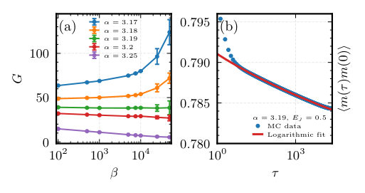
<figcaption class="paper-figure-caption"><b>Fig 1.</b> FIG. 2. Scaling function G as a function of β for different values of α (s = 1). G turns out to be independent of β at α ≈3.19 (a). Correlation function ⟨m(τ)m(0)⟩(blue dots) and logarithmic fit 0.7609(5) + 1.03(4)/(ln τ + 34.2(8)) (red line) as functions of τ (in units of ℏ/EC) at α = 3.19 (b).</figcaption>
</figure>
<figure class="paper-figure-card">
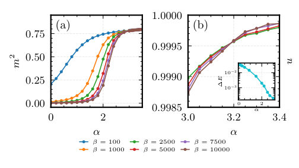
<figcaption class="paper-figure-caption"><b>Fig 2.</b> FIG. 1. Order parameter m2 as a function of α for different values of β (in units of 1/EC), in the Ohmic case (s = 1). The order parameter becomes non-zero as the coupling α is increased (a). Binder cumulant u for the same values of β, showing a scale-invariant crossing at αc ≈3.2 (b). Inset: Bandwidth ∆E as a function of α, obtained via DMRG.</figcaption>
</figure>
<figure class="paper-figure-card">
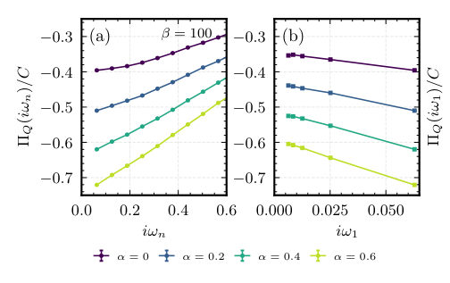
<figcaption class="paper-figure-caption"><b>Fig 3.</b> FIG. 3. (a) Normalized charge-charge correlation function ΠQ(iωn)/C (with C = ⟨k⟩) versus Matsubara frequency iωn at inverse temperature βEC = 100 for various α. (b) The same normalized function evaluated at the first Matsubara frequency, iω1 = 2π/β (in units of EC/ℏ), versus iω1 for different α. For α &lt; αc, the ratio does not converge to −1, implying a non-vanishing DQ also for α ̸= 0.</figcaption>
</figure>
<figure class="paper-figure-card">
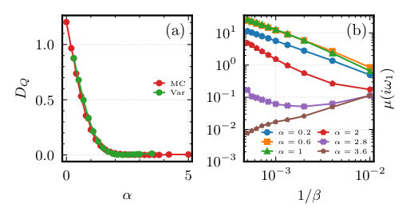
<figcaption class="paper-figure-caption"><b>Fig 4.</b> FIG. 4. Singular contribution DQ (in units of e2/EC) to the response function µ(ω) as a function of α at β = 100 (in units of 1/EC), computed via Monte Carlo (red dots) and variational approach (green dots) (a). Dimensionless mobility µ(iω1) at first imaginary frequency as a function of 1/β (b).</figcaption>
</figure>
<figure class="paper-figure-card">
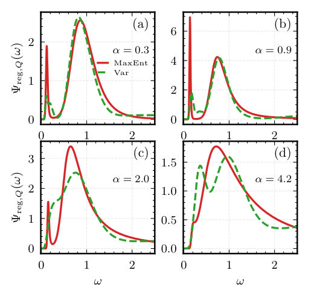
<figcaption class="paper-figure-caption"><b>Fig 5.</b> FIG. 5. Analytic reconstruction of the regular part of the response function Ψreg,Q (in units of e2ℏ/E2 C) at β = 100 (in units of 1/EC) as a function of the frequency ω (in units of EC/ℏ). Red (green) curves show the results obtained via MaxEnt algorithm (variational approach [43]).</figcaption>
</figure>
</div>

<p><strong>Summary.</strong> This paper analyzes the quantum phase transition in a Josephson junction by studying its response to different levels of environmental dissipation. It demonstrates that the transition is governed by the dissipation regime, showing a BKT transition in the Ohmic case. Crucially, it reveals a ballistic-to-localized dynamic crossover, challenging simple diffusive models of quantum tunneling.</p>
<p><strong>Why it may be interesting.</strong> The work provides a detailed theoretical understanding of how environmental coupling (dissipation) fundamentally alters the nature of quantum phase transitions in superconducting circuits, linking equilibrium critical points to measurable transport dynamics.</p>
<details>
<summary>Detailed structure</summary>
<p><strong>Main problem.</strong> The study investigates how quantum phase fluctuations and quasiparticle tunneling dictate the behavior of a Josephson junction across various dissipation regimes, aiming to pinpoint the signature of a Quantum Phase Transition (QPT).</p>
<p><strong>Main result.</strong> The system exhibits a Berezinskii-Kosterlitz-Thouless (BKT) QPT in the Ohmic regime, while the dynamics show a ballistic-to-localized crossover, contradicting standard diffusive predictions.</p>
<p><strong>Method.</strong> The research employs advanced numerical techniques, including Worldline Monte Carlo (WLMC), Density-Matrix Renormalization Group (DMRG), and real-frequency linear-response calculations.</p>
<p><strong>Model / system.</strong> The physical system is a small-capacitance Josephson junction, modeled using an effective imaginary-time action incorporating charging energy, Josephson coupling, and dissipation characterized by a memory kernel.</p>
<p><strong>Key observables.</strong> Order parameter ($m_2$), Binder cumulant ($u$), phase particle mobility ($\mu$), and the Drude weight ($D_Q$).</p>
<p><strong>Important parameters / regimes.</strong> Dissipation exponent ($s$) defining Ohmic ($s=1$), sub-Ohmic ($s<1$), and super-Ohmic ($s>1$) regimes; coupling strength ($\alpha$).</p>
<p><strong>Assumptions / limitations.</strong> The analysis relies on mapping the low-energy dynamics to the spin-boson model and comparing results against the Caldeira-Leggett (CL) model.</p>
<p><strong>Figures summary.</strong> Figures confirm the QPT via Binder cumulant crossings ($\alpha_c \approx 3.2$) and show the collapse of the bandwidth ($\Delta E$) as the transition is approached.</p>
<p><strong>Paper structure.</strong> The paper systematically analyzes the system across different dissipation regimes, first establishing the QPT signature using equilibrium methods, then detailing the dynamical crossover in the Ohmic regime, and finally comparing the results against established theoretical models like the spin-boson and polaronic models.</p>
</details>
<details>
<summary>Abstract</summary>
<p>Using state-of-the-art numerical techniques, we investigate how quantum phase fluctuations and quasiparticle tunneling shape the behavior of a small-capacitance Josephson junction across Ohmic, sub-Ohmic, and super-Ohmic dissipation regimes. We show that increasing the Ohmic dissipation strength drives a Berezinskii-Kosterlitz-Thouless quantum phase transition at thermodynamic equilibrium. Deviations from Ohmic behavior profoundly alter this scenario: the super-Ohmic regime exhibits no phase transition, whereas the sub-Ohmic regime displays a continuous second-order transition, consistent with the universality classes of the spin-boson model. Within the Ohmic regime, real-frequency linear-response calculations reveal that the phase particle does not undergo the commonly assumed diffusive-to-localized crossover. Instead, finite resistance progressively suppresses the singular zero-frequency response, producing a ballistic-to-localized change in the dynamics. At finite frequencies, coupling to the environment generates a long-lived excitation in the charge response, which evolves into a resonance as the subgap and shunt resistances are reduced.</p>
</details>
<p><sub><a href="#top">↑ back to top</a></sub></p>

<p><a id="paper-2608.28869"></a></p>
<h3 id="a-priori-assessment-of-tensor-network-encoding-for-isotropic-turbulent-flows">⭐ <a href="http://arxiv.org/abs/2608.28869v1">A priori Assessment of Tensor-Network Encoding for Isotropic Turbulent Flows</a></h3>
<p><strong>Highlighted author(s):</strong> Andrew J. Daley<br>
<strong>Authors:</strong> Massen Esmaeili, Hirad Alipanah, Robert Pinkston, Peyman Givi, Daniel Livescu, Andrew J. Daley, Dieter Jaksch, Juan José Mendoza-Arenas<br>
<strong>Type:</strong> theory · <strong>Category:</strong> numerical methods · <strong>PDF:</strong> <a href="https://arxiv.org/pdf/2608.28869v1">https://arxiv.org/pdf/2608.28869v1</a><br>
<strong>Analysis basis:</strong> full PDF text, analyzed in chunks
<strong>Topic relevance:</strong> <code>methods for driven-dissipative</code> <strong>3/5</strong> · <code>Keldysh / 2PI / non-Gaussian methods</code> <strong>1/5</strong> · <code>analog quantum simulation</code> <strong>1/5</strong></p>
<div class="figure-strip-hint">↔ Scroll figures horizontally</div>
<div class="paper-figures-scroll">
<figure class="paper-figure-card">
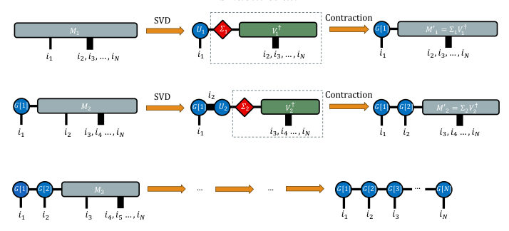
<figcaption class="paper-figure-caption"><b>Fig 1.</b> Figure 1. Schematic of the iterative MPS construction consisting of repeated cycles of SVD, contraction, and reshaping.</figcaption>
</figure>
<figure class="paper-figure-card">
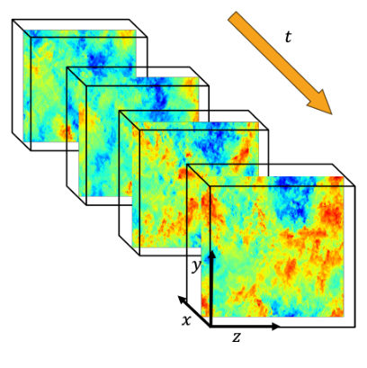
<figcaption class="paper-figure-caption"><b>Fig 2.</b> Figure 3. Contours of the 𝑢-velocity component from the isotropic turbulence dataset (Li et al. 2008a).</figcaption>
</figure>
<figure class="paper-figure-card">
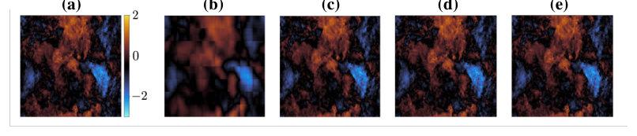
<figcaption class="paper-figure-caption"><b>Fig 3.</b> Figure 4. Contour plot of 𝑢-velocity in the 𝑥𝑦-plane at 𝑧= 𝜋. Left to right: the original DNS field (a) and MPS reconstructions for cutoffs 10−𝐶with 𝐶=2 to 5 (b–e).</figcaption>
</figure>
<figure class="paper-figure-card">
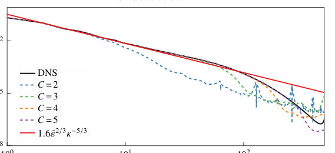
<figcaption class="paper-figure-caption"><b>Fig 4.</b> Figure 5. Energy spectrum comparison between DNS and MPS-reconstructed data for 𝐶=2 to 5. The red line shows the Kolmogorov inertial-range scaling.</figcaption>
</figure>
<figure class="paper-figure-card">
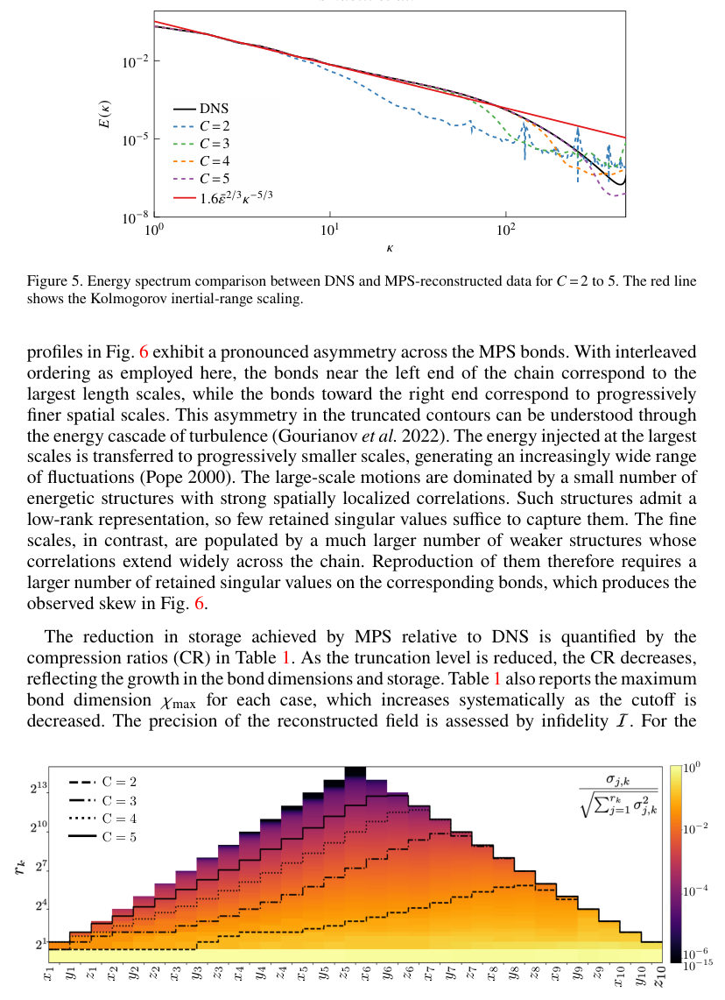
<figcaption class="paper-figure-caption"><b>Fig 5.</b> Figure 6. Schmidt spectrum for the 𝑢velocity using the interleaved ordering scheme. For each truncation level 𝐶, the maximum height of the corresponding contour line (i.e. the largest value of 𝜒𝑘across all bonds) gives the maximum retained bond dimension 𝜒max reported in Table 1.</figcaption>
</figure>
</div>

<p><strong>Summary.</strong> This work demonstrates that Matrix Product States (MPS) provide a highly effective and memory-efficient reduced-order modeling framework for complex, high-dimensional data like turbulent fluid fields. By systematically compressing the data using SVDs, the authors achieve near-DNS fidelity for key physical quantities while drastically reducing memory requirements. This validates TN methods for applying to complex classical physics problems beyond traditional quantum many-body simulations.</p>
<p><strong>Why it may be interesting.</strong> While focused on fluid dynamics, the methodology—using TNs to compress high-dimensional data by exploiting underlying correlation structures—is directly transferable to approximating quantum many-body wavefunctions or correlation functions in complex quantum systems.</p>
<details>
<summary>Detailed structure</summary>
<p><strong>Main problem.</strong> The paper assesses the suitability of Tensor-Network (TN) encoding, specifically the Matrix Product State (MPS) ansatz, for creating scalable, reduced-order models of high-dimensional fields, particularly complex turbulent flows.</p>
<p><strong>Main result.</strong> MPS reconstructions achieve high fidelity for key observables—like total kinetic energy and scalar energy—using significantly less memory (e.g., 5% for velocity) compared to full Direct Numerical Simulation (DNS) data.</p>
<p><strong>Method.</strong> The core method involves encoding the high-dimensional field tensor into an MPS via sequential Singular Value Decompositions (SVDs) and discarding small singular values to achieve compression.</p>
<p><strong>Model / system.</strong> The study analyzes isotropic turbulent flows, including the incompressible velocity field and a conserved passive Fickian scalar, using data from DNS simulations.</p>
<p><strong>Key observables.</strong> Fidelity of reconstructed fields, total kinetic energy, scalar energy, velocity gradients, dissipation rates ($\epsilon, \epsilon_\phi$), and structure functions.</p>
<p><strong>Important parameters / regimes.</strong> Bond dimensions ($\chi_k$), compression ratio (CR), and the truncation cutoff ($10^{-C}$).</p>
<p><strong>Assumptions / limitations.</strong> The dominant correlations in the turbulent field can be systematically captured by factorizing the field into a chain of interconnected tensors (the MPS ansatz).</p>
<p><strong>Figures summary.</strong> Figures illustrate the MPS construction process via SVD, the optimal interleaved tensor ordering, and comparisons of reconstructed fields/statistics (e.g., PDFs of invariants) against DNS results.</p>
<p><strong>Paper structure.</strong> The paper systematically assesses the compression-accuracy trade-off by applying the MPS encoding to both velocity and scalar fields, analyzing low-order statistics, gradient invariants, and scaling laws.</p>
</details>
<details>
<summary>Abstract</summary>
<p>Tensor networks (TNs), originally developed for simulating many-body quantum systems, provide a systematic framework for approximating high-dimensional fields. This is achieved by factorizing the field into interconnected tensors with small bond dimensions, thereby restricting the correlations captured across field bipartitions. Belonging to the family of TNs, the matrix product state (MPS) ansatz is utilized here as a reduced-order modeling framework to construct truncated representations of isotropic turbulent flow data. Two direct numerical simulation (DNS) datasets are considered: the hydrodynamic field of an incompressible three-dimensional flow, and a conserved Fickian scalar in a similar flow. Each field is encoded as an MPS through a sequence of singular value decompositions (SVDs) in which small singular values are discarded. The truncated representation is contracted back to the full grid, and the resulting reconstructed field is compared against DNS. An interleaved ordering of the spatial tensor indices of the transport variables is applied prior to decomposition in order to localize the dominant inter-tensor correlations. Velocity reconstructions achieve $99.8\%$ fidelity using only $5\%$ of the original DNS memory, while the scalar field reaches the same fidelity at $15\%$ memory usage. A wide range of lower- and higher-order statistics, including velocity gradients, dissipation, and structure functions, are systematically examined. At these compression levels, the total kinetic energy and the scalar energy are both recovered within $0.2\%$ relative error, while the mean dissipation and mean scalar dissipation remain within approximately $10\%$ of the DNS generated values. These findings support the suitability of MPS for scalable reduced-order analysis of complex turbulent datasets and motivate further exploration of TN-based methods in computational turbulence.</p>
</details>
<p><sub><a href="#top">↑ back to top</a></sub></p>

<p><a id="paper-2608.28848"></a></p>
<h3 id="direct-evidence-of-unconventional-superconductivity-in-doped-kagome-system-rvmath26mathsbmath27math">⭐ <a href="http://arxiv.org/abs/2608.28848v1">Direct Evidence of Unconventional Superconductivity in Doped Kagome system RV$_3$Sb$_5$</a></h3>
<p><strong>Highlighted author(s):</strong> Jörg Schmalian<br>
<strong>Authors:</strong> Avior Almoalem, Yuqing Xing, Iksu Jang, Daniel J. Schultz, Grgur Palle, Andrea N. Capa Salinas, Stephen D. Wilson, Rafael M. Fernandes, Jörg Schmalian, Vidya Madhavan<br>
<strong>Type:</strong> experiment · <strong>Category:</strong> strongly correlated electrons · <strong>PDF:</strong> <a href="https://arxiv.org/pdf/2608.28848v1">https://arxiv.org/pdf/2608.28848v1</a><br>
<strong>Analysis basis:</strong> full PDF text, analyzed in chunks
<strong>Topic relevance:</strong> <code>quantum measurements</code> <strong>2/5</strong></p>
<div class="figure-strip-hint">↔ Scroll figures horizontally</div>
<div class="paper-figures-scroll">
<figure class="paper-figure-card">
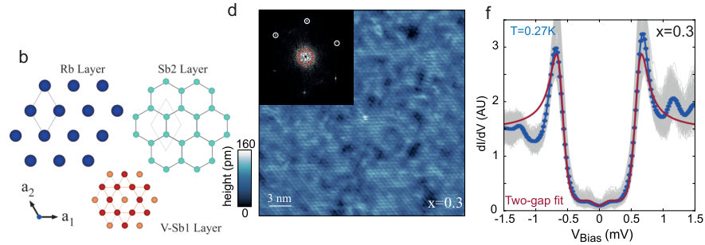
<figcaption class="paper-figure-caption"><b>Fig 1.</b> Fig. 1 Crystal structure, topography, and superconducting spectroscopy of Sn-doped RbV3Sb5−xSnx. a Crystal structure of RbV3Sb5. b Top view of the crystal structure showing the triangular Rb layer (blue), Sb honeycomb layer (cyan), and V–Sb kagome layer (red and brown). c STM topography of RbV3Sb4.94Sn0.06 after removal of surface Rb adatoms, exposing the Sb honeycomb lattice and isolated Sn dopants (35×35 nm2, VS = −20 mV, It = 200 pA). Inset: Fourier transform showing Bragg peaks (white circles), CDW peaks (cyan squares), and Friedel oscillations arising from surface scatterers. d STM topography of RbV3Sb4.7Sn0.3 (32×32 nm2, VS = 10 mV, It = 100 pA). The CDW peaks are absent, while the...</figcaption>
</figure>
<figure class="paper-figure-card">
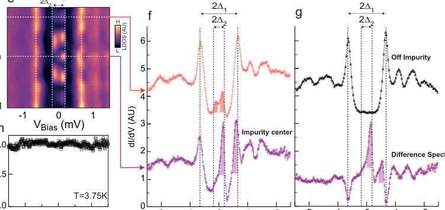
<figcaption class="paper-figure-caption"><b>Fig 2.</b> Fig. 2 Spatial and spectroscopic characteristics of type-I Imp-BS. a STM topography of the Sb honeycomb lattice in the vicinity of a type-I state. No structural defects are resolved at the bound-state center (white dot), indicating that the impurity resides beneath the terminating Sb layer. The white square marks the region shown in panels b-d (VS = −3 V, It = 5 nA). b,c Differential conductance maps acquired at ±120 µeV, corresponding to the dominant impurity-induced states. Pronounced spatial oscillations and a clear reduction of the native sixfold rotational symmetry are observed. The white arrow indicates the line cut shown in panel e (VS = −3 mV, It = 150 pA, Vmod = 30 µV). d...</figcaption>
</figure>
<figure class="paper-figure-card">
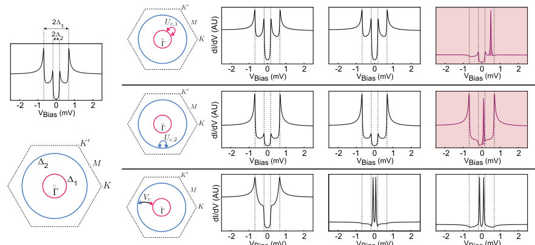
<figcaption class="paper-figure-caption"><b>Fig 3.</b> Fig. 3 Theoretical response of candidate superconducting pairing symmetries to a nonmagnetic impurity. a Density of states obtained from the model calculations without impurity, together with the corresponding multiband Fermi surface. The larger superconducting gap, ∆1, is assigned to the Sb-derived Γ pocket, whereas the smaller gap, ∆2, resides on the V-derived Fermi-surface sheets, consistent with the experimental observations. b Calculated local density of states at the impurity center for the candidate pairing symmetries and nonmagnetic scattering channels indicated in the left column. The highlighted panels correspond to the only pairing states that reproduce the key experimental...</figcaption>
</figure>
<figure class="paper-figure-card">
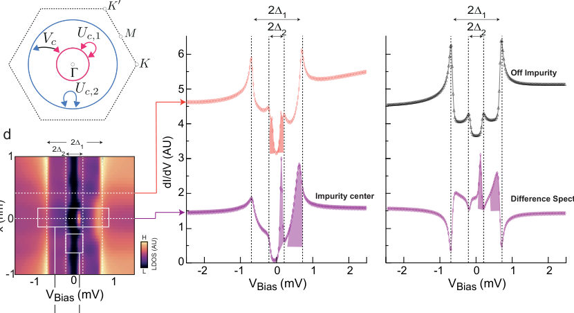
<figcaption class="paper-figure-caption"><b>Fig 4.</b> Fig. 4 Microscopic calculation of the type-I impurity-induced state using a nonmagnetic scattering poten- tial. a Schematic of the impurity-scattering processes included in the calculation. Both intraband and interband charge scattering are incorporated. b Calculated local density of states at the impurity center (purple) and away from it (orange), corresponding to the horizontal dashed lines in panel d. The calculation reproduces the pronounced particle-hole asymmetry at the impurity center and the gradual recovery of particle-hole symmetry with increasing distance observed experimen- tally. Black dashed lines indicate the superconducting gap energies ∆1 and ∆2. c Pristine local density of...</figcaption>
</figure>
<figure class="paper-figure-card">
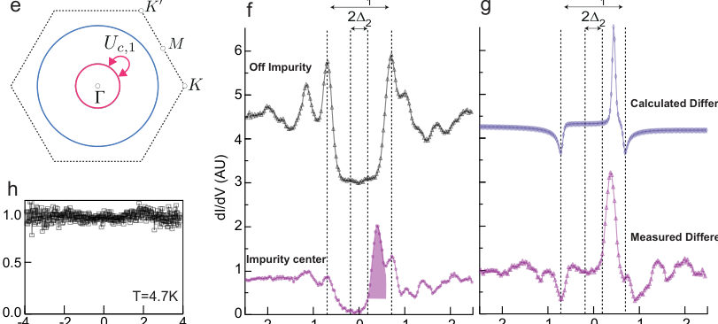
<figcaption class="paper-figure-caption"><b>Fig 5.</b> Fig. 5 Spatial and spectroscopic characteristics of the type-II Imp-BS. a STM topography of the Sb honeycomb lattice in the vicinity of a type-II state. No structural defects are resolved at the impurity center (white dot), indicating that the defect resides beneath the terminating Sb layer (VS = −3 V, It = 5 nA). b-d Differential conductance maps acquired at ±420 µeV, corresponding to the Imp-BS, and at the Fermi level. The spatial scale bar is identical for panels b-d, which were acquired simultaneously. Unlike the type-I state, the type-II state exhibits no pronounced spatial oscillations, although the maximal particle-hole asymmetry remains localized at the impurity center. Furthermore,...</figcaption>
</figure>
</div>

<p><strong>Summary.</strong> This work uses STM spectroscopy on doped kagome metal RbV3Sb5 to investigate its superconducting pairing symmetry. By analyzing impurity-induced bound states and observing a two-gap structure, the authors rule out simple s-wave pairing. They provide strong evidence that the material realizes a fully gapped chiral superconducting state.</p>
<p><strong>Why it may be interesting.</strong> The use of impurity-bound state spectroscopy as a powerful, phase-sensitive probe for unconventional superconductivity provides a concrete experimental methodology applicable to strongly correlated materials.</p>
<details>
<summary>Detailed structure</summary>
<p><strong>Main problem.</strong> Determining the superconducting pairing symmetry of kagome metals, which is a central unresolved question in the field.</p>
<p><strong>Main result.</strong> The superconducting state in optimally doped RbV3Sb5 is strongly evidenced to be a fully gapped chiral superconducting state, inconsistent with conventional s-wave or s+- pairing.</p>
<p><strong>Method.</strong> The study employs impurity-bound state spectroscopy using Scanning Tunneling Microscopy (STM) to probe the superconducting order parameter phase sensitivity.</p>
<p><strong>Model / system.</strong> The system is the doped Kagome metal RbV3Sb5, analyzed using a two-gap model derived from a minimal two-band Hamiltonian describing Sb- and V-derived Fermi pockets.</p>
<p><strong>Key observables.</strong> Pronounced particle-hole asymmetric bound states around nonmagnetic defects, two distinct superconducting energy gaps (680 $\mu$eV and 180 $\mu$eV), and vanishing QPI signal at the Fermi level.</p>
<p><strong>Important parameters / regimes.</strong> Optimal doping level (suppressing CDW), low temperature (270 mK), and the two distinct energy scales ($\Delta_1, \Delta_2$).</p>
<p><strong>Assumptions / limitations.</strong> The analysis assumes that the observed impurity-bound states are sensitive enough to distinguish between different pairing symmetries, and that the two-gap structure is robustly linked to the two electronic bands.</p>
<p><strong>Figures summary.</strong> Figures show STM topography, superconducting spectroscopy ($   ext{d}I/    ext{d}V$ maps) revealing two gaps, and QPI analysis confirming the two-gap structure and the vanishing gap at zero energy.</p>
<p><strong>Paper structure.</strong> The paper systematically uses STM spectroscopy to first establish the two-gap nature of the superconductor, then uses theoretical calculations to rule out conventional symmetries, culminating in the identification of a chiral order parameter.</p>
</details>
<details>
<summary>Abstract</summary>
<p>The superconducting pairing symmetry of kagome metals remains a central unresolved question largely because phase-sensitive experiments capable of distinguishing between different possible order parameters have been difficult to implement. The spatial and energetic characteristics of impurity bound states measured by spectroscopic-imaging scanning tunneling microscopy encode information on the superconducting order parameter. Here, we use impurity-bound state spectroscopy to investigate optimally doped RbV$_3$Sb$_{5}$ where the charge-density wave instability is fully suppressed. We find that the superconducting state is fully gapped and exhibits two distinct energy scales, consistent with a multiband order parameter. Atomic-scale spectroscopy around nonmagnetic defects reveals pronounced particle-hole asymmetric bound states. Comparison with theoretical calculations demonstrates that these bound states are incompatible with conventional $s$-wave and sign-changing $s^{\pm}$ pairing. Our calculations also show that the data are fully consistent with a chiral order parameter. Our results establish impurity-bound-state spectroscopy as a powerful phase-sensitive probe of superconductivity in kagome materials and provide strong evidence that optimally doped RbV$_3$Sb$_{5}$ realizes a fully gapped chiral superconducting state.</p>
</details>
<p><sub><a href="#top">↑ back to top</a></sub></p>

<p><a id="paper-2608.30764"></a></p>
<h3 id="cycle-structure-generating-functions-for-special-breakpoint-graphs">⭐ <a href="http://arxiv.org/abs/2608.30764v1">Cycle-Structure Generating Functions for Special Breakpoint Graphs</a></h3>
<p><strong>Highlighted author(s):</strong> Alexey V. Gorshkov<br>
<strong>Authors:</strong> Max A. Alekseyev, Joseph T. Iosue, Adam Ehrenberg, Alexey V. Gorshkov<br>
<strong>Type:</strong> theory · <strong>Category:</strong> other · <strong>PDF:</strong> <a href="https://arxiv.org/pdf/2608.30764v1">https://arxiv.org/pdf/2608.30764v1</a><br>
<strong>Analysis basis:</strong> full PDF text, analyzed in chunks</p>
<div class="figure-strip-hint">↔ Scroll figures horizontally</div>
<div class="paper-figures-scroll">
<figure class="paper-figure-card">
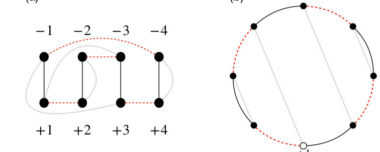
<figcaption class="paper-figure-caption"><b>Fig 1.</b> Figure 1: An example of graph representations of a permutation τ = (3, 2, 1, 4) with n = 2. (a) The corresponding special breakpoint graph. (b) The same graph with the black-red cycle drawn as a circle and gray edges drawn as chords. The marked vertex +1 is the root and determines the remaining labels. This example is noncrossing.</figcaption>
</figure>
<figure class="paper-figure-card">
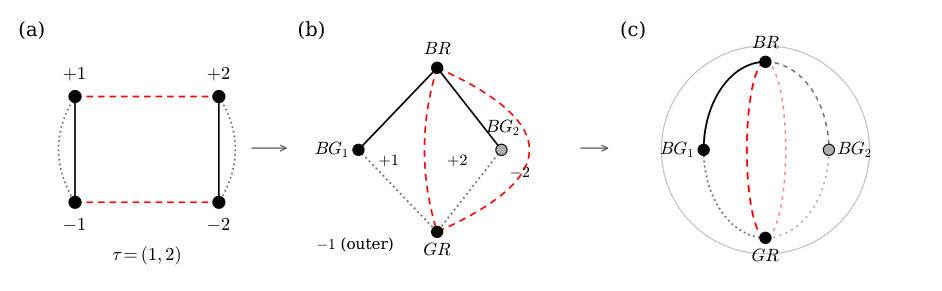
<figcaption class="paper-figure-caption"><b>Fig 2.</b> Figure 2: The canonical-surface construction in the smallest spherical example. (a) The special breakpoint graph for n = 1 and τ = (1, 2). The gray matching coincides with the black matching and is drawn by offset dotted arcs so that both colors remain visible. (b) The 1-skeleton of the associated four-face triangulation, drawn as a planar map; the region marked −1 is the outer face. Its vertices BG1, BG2, BR, GR correspond to the bicolored cycles, while its four triangular faces +1, +2, −1, −2 correspond to the four vertices of the breakpoint graph. In particular, each red side joins BR to GR. (c) The same triangulation realized on S2. All colored arcs lie on the sphere; dark arcs lie on...</figcaption>
</figure>
<figure class="paper-figure-card">
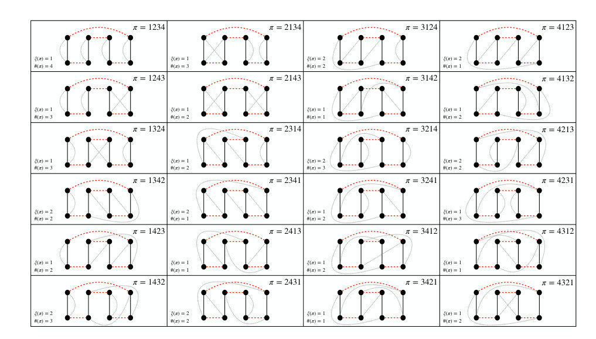
<figcaption class="paper-figure-caption"><b>Fig 3.</b> Figure 3: Example for n = 2 (so 2n = 4). The 24 diagrams are the breakpoint graphs associated with the permutations π ∈S4 (here written in one-line notation). ξ(π) denotes the number of gray-red cycles. #(π), the number of cycles of the permutation, is the number of black-gray cycles.</figcaption>
</figure>
<figure class="paper-figure-card">
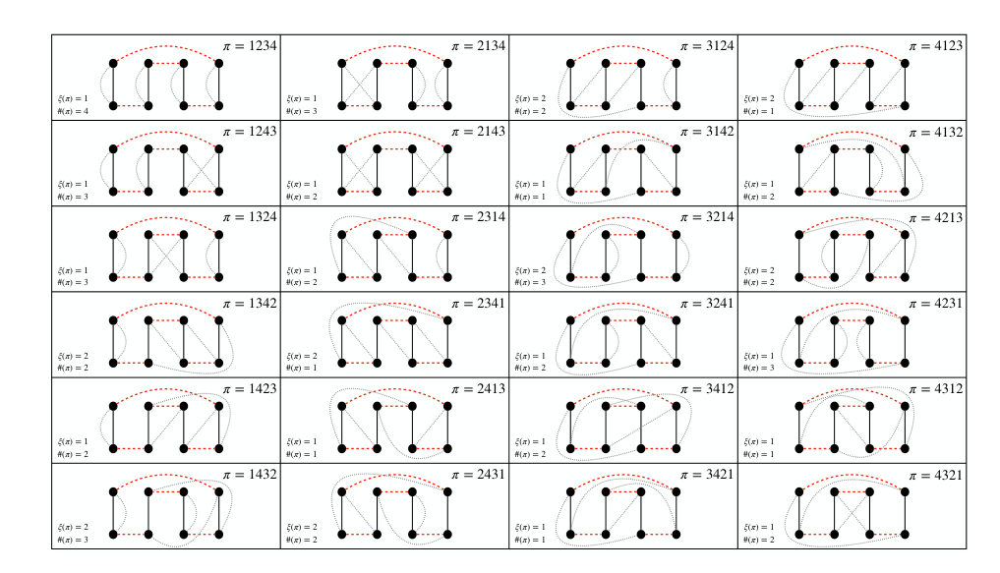
<figcaption class="paper-figure-caption"><b>Fig 4.</b> Figure 3 illustrates this dictionary for all permutations in S4, displaying ξ(π) and #(π) alongside their breakpoint graphs. This permutation-theoretic form is particularly convenient for the fixed- support arguments later in Section 4, while Proposition 1 gives the same parameter its topological meaning.</figcaption>
</figure>
<figure class="paper-figure-card">
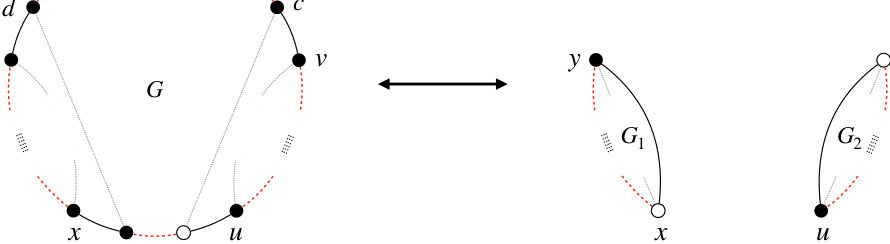
<figcaption class="paper-figure-caption"><b>Fig 5.</b> Figure 4: A bijective transformation of (a) a noncrossing special breakpoint graph of order 4n rooted at vertex a into (b) three noncrossing special breakpoint graphs rooted at vertices x, v, w and the total order 4(n −1).</figcaption>
</figure>
</div>

<p><strong>Summary.</strong> This paper develops advanced combinatorial methods using cycle-structure generating functions for special breakpoint graphs, linking them to topological surfaces like the sphere and projective plane. Crucially, it shows that the combinatorial results derived from these graphs provide the exact moment polynomials needed to calculate the Rényi entropy expansion for entanglement in random Gaussian quantum states.</p>
<p><strong>Why it may be interesting.</strong> The connection between deep combinatorial structures (graph theory, permutation statistics) and fundamental quantities in quantum information theory (entanglement entropy) provides a powerful, non-obvious mathematical underpinning for physics results.</p>
<details>
<summary>Detailed structure</summary>
<p><strong>Main problem.</strong> The paper develops intrinsic combinatorics and multivariate generating functions for a constrained class of graphs called 'special breakpoint graphs.' It connects these graph structures to topological invariants like the Euler characteristic.</p>
<p><strong>Main result.</strong> The combinatorial results yield explicit Catalan-weighted evaluations and determine the leading and constant moment polynomials for the Rényi entropy expansion of random Gaussian states in linear optics.</p>
<p><strong>Method.</strong> The authors use the construction of a canonical surface associated with the graph to classify strata ($\kappa=1$ for $S^2$, $\kappa=0$ for $\mathbb{RP}^2$) and derive recursive relations for the corresponding generating functions.</p>
<p><strong>Model / system.</strong> The primary model is the 'special breakpoint graph,' which originates in comparative genomics and encodes relationships between genomes via alternating cycles formed by three perfect matchings. A secondary application involves the entanglement entropy of random Gaussian states in linear optics.</p>
<p><strong>Key observables.</strong> The stratum parameter $\kappa$, the Euler characteristic $\chi(\Sigma_G)$, and the moment polynomials ($G_\ell(r)$ and $H_\ell(r)$) for the Rényi entropy expansion.</p>
<p><strong>Important parameters / regimes.</strong> The graph size parameter $n$, and the topological invariants $\kappa$ (which determines the surface type, e.g., $S^2$ or $\mathbb{RP}^2$).</p>
<p><strong>Assumptions / limitations.</strong> The analysis relies on the equivalence between polygon-gluing and colored-triangulation descriptions, and the focus is initially restricted to the two extremal strata ($\kappa=1$ and $\kappa=0$).</p>
<p><strong>Figures summary.</strong> Figures illustrate the graph structure and the canonical surface construction for small examples, showing realizations on the sphere ($S^2$) for the spherical family.</p>
<p><strong>Paper structure.</strong> The paper first establishes the combinatorial and topological framework for the graphs, deriving generating functions for the $\kappa=1$ (spherical) and $\kappa=0$ (projective plane) families. It then applies these combinatorial results to derive the leading and constant moment polynomials for the Rényi entropy expansion in quantum optics. Finally, it discusses extending the analysis to lower strata ($\kappa < 0$).</p>
</details>
<details>
<summary>Abstract</summary>
<p>Breakpoint graphs originate in comparative genomics, where their alternating cycles encode relationships between genomes. We study a constrained class of three-colored breakpoint graphs associated with permutations and develop cycle-refined generating functions for two extremal families. These families have a natural topological interpretation: their canonical surfaces are, respectively, the sphere and the projective plane. The spherical family is characterized by noncrossing configurations, while the projective-plane family admits a different decomposition involving a distinguished family of Möbius ladders.   The resulting generating-function equations retain the full cycle structure but nevertheless admit substantial reductions. This leads to explicit Catalan-weighted evaluations, polynomiality results for refined cycle statistics, and a connection between a natural diagonal specialization and noncrossing trees. The two topological families exhibit markedly different combinatorial mechanisms, providing complementary examples of how local transformations of breakpoint graphs can control refined permutation enumerations.   As a further application, the same Catalan-weighted sums arise in asymptotic unitary-Weingarten expansions for entanglement of random Gaussian states in linear optics. The combinatorial results determine the leading and constant-order moment polynomials entering the Rényi entropy expansion, with the projective-plane contribution giving the finite-size constant correction.</p>
</details>
<p><sub><a href="#top">↑ back to top</a></sub></p>

<p><a id="paper-2608.29811"></a></p>
<h3 id="dark-state-as-a-measurable-state-by-a-dispersive-readout-without-a-purcell-limit"><a href="http://arxiv.org/abs/2608.29811v1">Dark state as a measurable state by a dispersive readout without a Purcell limit</a></h3>
<p><strong>Authors:</strong> Wei-Chen Chien, Jyh-Yang Wang, Yen-Yu Chiang, Cheng-Chengh Huang, Lih-Chieh Hsaio, Yen-Chun Chen, Cen-Shawn Wu, Chiidong Chen, Watson Kuo<br>
<strong>Type:</strong> experiment · <strong>Category:</strong> other · <strong>PDF:</strong> <a href="https://arxiv.org/pdf/2608.29811v1">https://arxiv.org/pdf/2608.29811v1</a><br>
<strong>Analysis basis:</strong> full PDF text, analyzed in chunks
<strong>Topic relevance:</strong> 🔥 <code>quantum measurements</code> <strong>4/5</strong> · <code>QC/QI experiment</code> <strong>3/5</strong> · <code>Tavis-Cummings &amp; cavity-many-emitter</code> <strong>3/5</strong> · <code>correlated / nonlocal dissipation</code> <strong>3/5</strong> · <code>quantum optics experiment</code> <strong>3/5</strong> · <code>analog quantum simulation</code> <strong>2/5</strong> · <code>driven-dissipative phase transition</code> <strong>2/5</strong> · <code>methods for driven-dissipative</code> <strong>2/5</strong> · <code>Keldysh / 2PI / non-Gaussian methods</code> <strong>1/5</strong></p>
<div class="figure-strip-hint">↔ Scroll figures horizontally</div>
<div class="paper-figures-scroll">
<figure class="paper-figure-card">
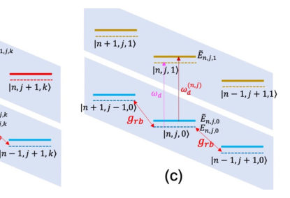
<figcaption class="paper-figure-caption"><b>Fig 1.</b> Fig. 1. (a) The proposed 3-body model. (b) The light-blue shaded regions denote</figcaption>
</figure>
<figure class="paper-figure-card">
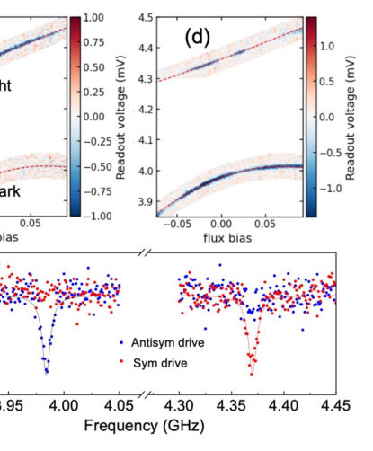
<figcaption class="paper-figure-caption"><b>Fig 2.</b> Fig. 1 (a) A photograph of two capacitively coupled X-mon qubits symmetrically coupled to a readout resonator(R). (b) Enlarged picture of the X-mons. (c)(d) Coupled</figcaption>
</figure>
<figure class="paper-figure-card">
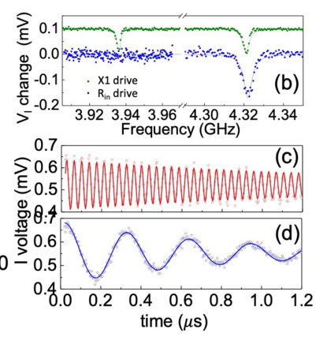
<figcaption class="paper-figure-caption"><b>Fig 3.</b> Fig. 3 (a) Histograms of T1 for bright(red) and dark states(blue) (b) Spectrum of the bright and dark states with a long driving tone applied from X1 gate(green) and Rin line(blue). The green curve is shifted vertically for clarity. (c) The time Rabi oscillations of bright state driving from Rin line. (d) The time Rabi oscillations of dark</figcaption>
</figure>
<figure class="paper-figure-card">
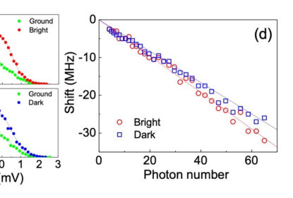
<figcaption class="paper-figure-caption"><b>Fig 4.</b> Fig. 4 (a) The IQ plots for 100 × averaged readout for the states prepared at</figcaption>
</figure>
</div>

<p><strong>Summary.</strong> This paper proposes and experimentally demonstrates a 'dark mode' in a coupled superconducting qubit system that circumvents the Purcell decay limit inherent in high-coupling regimes. By utilizing a specific ZZ-type interaction, the dark state achieves near-zero radiative loss while remaining distinctly measurable via dispersive readout techniques. This breakthrough paves the way for building more robust and scalable quantum hardware.</p>
<p><strong>Why it may be interesting.</strong> This work provides a concrete, experimentally realized mechanism to engineer quantum states that are robust against environmental decoherence (Purcell loss) while remaining accessible for quantum measurement, which is a major goal in building scalable quantum processors.</p>
<details>
<summary>Detailed structure</summary>
<p><strong>Main problem.</strong> The paper addresses the trade-off in circuit quantum electrodynamics (cQED) between achieving strong readout coupling and minimizing Purcell decay, which limits qubit lifetime.</p>
<p><strong>Main result.</strong> The authors demonstrate a measurable 'dark mode' in a coupled quantum system that exhibits zero Purcell loss while maintaining a dispersive shift comparable to the bright state.</p>
<p><strong>Method.</strong> The study combines theoretical analysis (perturbation theory) with experimental measurements, including two-tone spectroscopy, time-resolved Rabi oscillations, and single-shot readout.</p>
<p><strong>Model / system.</strong> The system uses two capacitively coupled X-mon qubits coupled to a readout resonator, forming a minimal 3-body model. The physics is analyzed by identifying and characterizing the resulting bright and dark collective modes.</p>
<p><strong>Key observables.</strong> Dark-state-dependent dispersive shift, suppressed resonator coupling, distinct long coherence times ($T_1$), and measurable AC-Stark shifts.</p>
<p><strong>Important parameters / regimes.</strong> The experiment operates in the dispersive readout regime (1-2 GHz detuning) with specific coupling strengths ($g/\hbar \approx 53 	ext{ MHz}$; $g_{Q}/\hbar \approx 211 	ext{ MHz}$).</p>
<p><strong>Assumptions / limitations.</strong> The analysis relies on the Rotating-Wave Approximation (RWA), and the Purcell limit study uses a phenomenological relaxation rate.</p>
<p><strong>Figures summary.</strong> Figures illustrate the proposed 3-body model, energy repulsion in the RWA manifold, the photon-number-dependent AC Stark shift of the dark mode, and experimental readouts (IQ plots, Rabi oscillations) confirming state distinguishability.</p>
<p><strong>Paper structure.</strong> The paper first introduces the theoretical model and the problem of Purcell loss. It then details the experimental setup using coupled transmons and proceeds through state characterization, loss measurement, and finally demonstrates the measurable nature of the dark state via dispersive readout.</p>
</details>
<details>
<summary>Abstract</summary>
<p>It is believed that the enhancement in qubit-resonator coupling allows a better dispersive readout but introduces greater Purcell loss. In this work, we propose that a dark mode in a coupled quantum system may violate this rule by introducing the ZZ interaction between the dark and a bright mode. The dark mode may exhibit an effective zero coupling strength, and zero Purcell loss with the resonator photons. Nevertheless, the dispersive shift is almost the same as the bright state, due to the higher order perturbation introduced by the higher excited states. Such a state demonstrates the measurability without a Purcell limit in circuit quantum electrodynamics.</p>
</details>
<p><sub><a href="#top">↑ back to top</a></sub></p>

<p><a id="paper-2608.31154"></a></p>
<h3 id="engineering-multi-photon-dissipation-with-a-dc-voltage-biased-josephson-junction"><a href="http://arxiv.org/abs/2608.31154v1">Engineering multi-photon dissipation with a dc-voltage-biased Josephson junction</a></h3>
<p><strong>Authors:</strong> Marco Paradina, Ambroise Peugeot, Roberto Negrin, Oscar Novat, Tristan Villain, Anil Murani, Jean-Loup Ville, Sébastien Jezouin, Raphaël Lescanne, Audrey Bienfait, Benjamin Huard<br>
<strong>Type:</strong> experiment · <strong>Category:</strong> quantum information and computing · <strong>PDF:</strong> <a href="https://arxiv.org/pdf/2608.31154v1">https://arxiv.org/pdf/2608.31154v1</a><br>
<strong>Analysis basis:</strong> full PDF text, analyzed in chunks
<strong>Topic relevance:</strong> 🔥 <code>QC/QI experiment</code> <strong>4/5</strong> · <code>correlated / nonlocal dissipation</code> <strong>3/5</strong> · <code>driven-dissipative phase transition</code> <strong>3/5</strong> · <code>methods for driven-dissipative</code> <strong>3/5</strong> · <code>quantum optics experiment</code> <strong>3/5</strong> · <code>quantum measurements</code> <strong>2/5</strong> · <code>Keldysh / 2PI / non-Gaussian methods</code> <strong>1/5</strong> · <code>Tavis-Cummings &amp; cavity-many-emitter</code> <strong>1/5</strong> · <code>analog quantum simulation</code> <strong>1/5</strong> · <code>non-equilibrium universality</code> <strong>1/5</strong></p>
<div class="figure-strip-hint">↔ Scroll figures horizontally</div>
<div class="paper-figures-scroll">
<figure class="paper-figure-card">
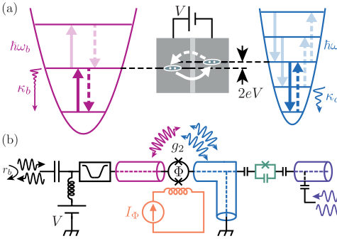
<figcaption class="paper-figure-caption"><b>Fig 1.</b> FIG. 1. (a) Energy levels of memory mode a (blue) and buffer mode b (magenta) coupled to a Josephson junction biased with a voltage V . For 2eV = 2ℏωa −ℏωb, Cooper pair tunnel- ing enables transitions converting a pair of photons of mode a into a single photon of mode b (solid arrows) and back (dashed arrows). (b) Circuit schematic. Memory and buffer are λ/4 resonators coupled to a SQUID, acting as a single junction with a flux tunable Josephson energy EJ(Φ). A stepped impedance filter inhibits memory decay through the buffer line while ensuring a galvanic connection as well as a large coupling rate for the buffer mode. A bias tee allows us to dc- voltage-bias the SQUID and perform RF...</figcaption>
</figure>
<figure class="paper-figure-card">
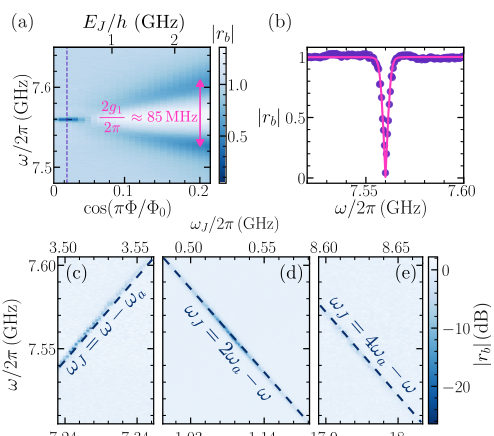
<figcaption class="paper-figure-caption"><b>Fig 2.</b> FIG. 2. (a) Magnitude of the buffer reflection coeffi- cient |rb| versus probe frequency ω and cos(πΦ/Φ0) (equiv- alent EJ(Φ), top axis). The 1-to-1 photon swap is acti- vated by setting 2eV = ℏ(ωb −ωa) = h × 3.52 GHz. As the swap rate g1 ∝| cos(πΦ/Φ0)| increases, the single ab- sorption dip at ωb splits owing to the hybridization of buffer and memory modes. The separation 2g1 reaches 2g1/2π ≈ 85 MHz. (b) Dots: reflection coefficient at critical coupling (cos(πΦ/Φ0) = 0.024 as indicated in (a)). Solid line: fit us- ing an input–output model that includes the residual bias- voltage noise [55], giving g1/2π = 4.8 MHz and a Josephson- frequency linewidth σJ/2π = 1.5 MHz. (c,d,e) |rb| versus...</figcaption>
</figure>
<figure class="paper-figure-card">
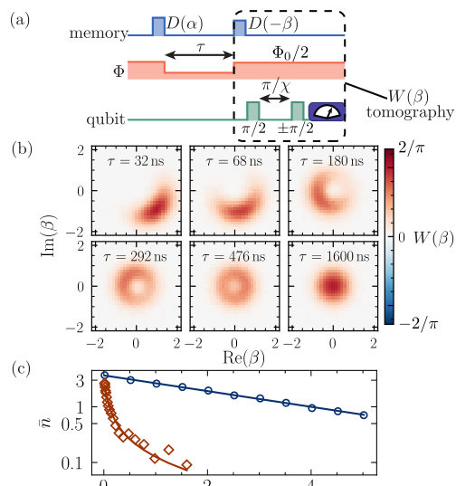
<figcaption class="paper-figure-caption"><b>Fig 3.</b> FIG. 3. (a) Pulse sequence: after preparing the mem- ory in a coherent state |α⟩at flux Φ = Φ0/2 (where EJ is negligible), the flux is pulsed to establish a given EJ for a duration τ. Then a memory Wigner tomography is per- formed at Φ = Φ0/2 using the dispersively coupled trans- mon [62–64]. (b) Measured Wigner function W(β) at in- creasing τ for α = √</figcaption>
</figure>
<figure class="paper-figure-card">
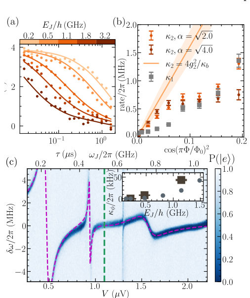
<figcaption class="paper-figure-caption"><b>Fig 4.</b> FIG. 4. (a) Dots: extracted average photon number ¯n as a function of time τ under the same 2-photon dissipa- tion conditions as in Fig. 3b for various values of EJ (col- orbar). Lines: fit to a two-mode model [55] that extracts gmax 2 /2π = 18.5±0.5 MHz. (b) Dots with error bars: Effective two-photon dissipation rate κ2 as a function of EJ extracted from ¯n(τ) using the semiclassical model (Eq. 4) for initial coherent amplitudes α = √</figcaption>
</figure>
</div>

<p><strong>Summary.</strong> The authors demonstrate a novel method to engineer multi-photon dissipation in superconducting circuits by biasing a SQUID junction with a DC voltage. This technique allows for precise control over photon loss rates, enabling the study of bosonic qubits and providing a robust pathway for stabilizing complex quantum states like cat qubits.</p>
<p><strong>Why it may be interesting.</strong> This work provides a highly controllable, solid-state platform for implementing engineered dissipation, which is fundamental for building robust quantum memories and stabilizing high-dimensional quantum states like cat qubits.</p>
<details>
<summary>Detailed structure</summary>
<p><strong>Main problem.</strong> The paper addresses the challenge of engineering multi-photon dissipation, a crucial resource for bosonic qubits, by developing a method that avoids spurious nonlinear terms present in standard parametric pumping techniques.</p>
<p><strong>Main result.</strong> They successfully demonstrated that using a dc-voltage-biased SQUID can engineer controlled single- and two-photon loss, and activate up to 4-to-1 photon swaps, proving it is a viable route for reservoir engineering and cat-qubit stabilization.</p>
<p><strong>Method.</strong> The research combines microwave reflectometry to characterize coupling strengths and voltage sweeping to activate specific photon conversion processes, complemented by Wigner tomography to measure the time evolution of the quantum state.</p>
<p><strong>Model / system.</strong> The physical system is a superconducting circuit comprising a high-Q memory resonator coupled to a buffer resonator via a dc-voltage-biased SQUID. The dynamics are modeled using a Josephson Hamiltonian and analyzed via a master equation incorporating dissipation terms.</p>
<p><strong>Key observables.</strong> Two-photon dissipation rate ($\kappa_2$), single-photon loss rate ($\kappa_a$), photon number decay $ar{n}(	au)$, and the Wigner function $W(eta)$.</p>
<p><strong>Important parameters / regimes.</strong> The engineered dissipation rate $\kappa_2$ is proportional to the buffer loss rate $\kappa_b$; the coupling strength $g_{	ext{max}}^2/2\pi$ was measured to be $18.5 \pm 0.5$ MHz.</p>
<p><strong>Assumptions / limitations.</strong> The analysis relies on adiabatically eliminating the buffer mode and assumes that parasitic nonlinear terms average out to zero at first order in the rotating wave approximation.</p>
<p><strong>Figures summary.</strong> Figures illustrate energy level diagrams showing photon conversion, circuit schematics, and time-domain plots ($ar{n}(	au)$) comparing decay under different loss mechanisms (e.g., 1-photon vs. 2-photon loss).</p>
<p><strong>Paper structure.</strong> The paper progresses from establishing the physical platform and the theoretical advantage of the dc-bias method, to characterizing various photon swap regimes (1-to-1, 2-to-1, 4-to-1) via reflectometry, and finally quantifying the dissipation dynamics using time-resolved Wigner tomography.</p>
</details>
<details>
<summary>Abstract</summary>
<p>Multi-photon dissipation -- a key resource for bosonic qubits -- is usually realized by parametrically pumping a Josephson coupler at the cost of spurious nonlinear terms. Here we instead engineer it using a dc-voltage-biased SQUID, such that these parasitic terms average out. We activate the conversion of one, two, or four photons of a high-Q mode into a single photon of a lossy mode. We characterize the two-photon dissipation by Wigner tomography, establishing dc-biased junctions as a resource for reservoir engineering and a viable route to cat-qubit stabilization.</p>
</details>
<p><sub><a href="#top">↑ back to top</a></sub></p>

<p><a id="paper-2608.29515"></a></p>
<h3 id="demonstration-of-traveling-wave-interactions-between-spontaneous-photon-emissions-and-atoms-in-a-chiral-f-p-cavity"><a href="http://arxiv.org/abs/2608.29515v1">Demonstration of traveling-wave interactions between spontaneous photon emissions and atoms in a chiral F-P cavity</a></h3>
<p><strong>Authors:</strong> Jiajin Lu, Minjie Wang, Haole Jiao, Xiang Chen, Hongze Zhang, Shujing Li, Hai Wang<br>
<strong>Type:</strong> experiment · <strong>Category:</strong> other · <strong>PDF:</strong> <a href="https://arxiv.org/pdf/2608.29515v1">https://arxiv.org/pdf/2608.29515v1</a><br>
<strong>Analysis basis:</strong> full PDF text, analyzed in chunks
<strong>Topic relevance:</strong> 🔥 <code>quantum optics experiment</code> <strong>4/5</strong> · <code>Tavis-Cummings &amp; cavity-many-emitter</code> <strong>3/5</strong> · <code>analog quantum simulation</code> <strong>3/5</strong> · <code>correlated / nonlocal dissipation</code> <strong>3/5</strong> · <code>driven-dissipative phase transition</code> <strong>2/5</strong> · <code>interference shaping light</code> <strong>2/5</strong> · <code>QC/QI experiment</code> <strong>1/5</strong> · <code>methods for driven-dissipative</code> <strong>1/5</strong> · <code>non-equilibrium universality</code> <strong>1/5</strong> · <code>quantum measurements</code> <strong>1/5</strong></p>
<div class="figure-strip-hint">↔ Scroll figures horizontally</div>
<div class="paper-figures-scroll">
<figure class="paper-figure-card">
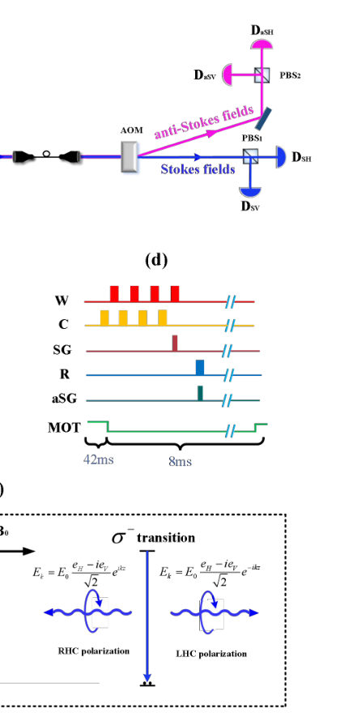
<figcaption class="paper-figure-caption"><b>Fig 1.</b> Fig. 1. Overview of the experiment. (a) Setup for the experiment. W: write laser pulse;</figcaption>
</figure>
<figure class="paper-figure-card">
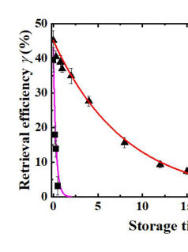
<figcaption class="paper-figure-caption"><b>Fig 2.</b> Figure 2. Measured time-dependent retrieval efficiencies of spin waves correlated with LHCP</figcaption>
</figure>
</div>

<p><strong>Summary.</strong> This paper experimentally demonstrates traveling-wave atom-light interactions in a chiral Fabry-Pérot cavity, overcoming the limitations of standard standing-wave setups. By breaking time-reversal symmetry and utilizing chirality, the system achieves nonreciprocal coupling, splitting the field into two distinct, long-lived traveling-wave modes. This paves the way for advanced quantum memory applications.</p>
<p><strong>Why it may be interesting.</strong> This work is highly relevant as it pushes the boundaries of cavity QED by engineering nonreciprocal interactions, which is crucial for building robust quantum memories and quantum repeaters.</p>
<details>
<summary>Detailed structure</summary>
<p><strong>Main problem.</strong> The study aims to demonstrate and utilize traveling-wave atom-light interactions in a Fabry-Pérot (F-P) cavity, overcoming the limitations imposed by standing-wave coupling.</p>
<p><strong>Main result.</strong> The researchers successfully demonstrated nonreciprocal, traveling-wave atom-photon interactions by using a chiral F-P cavity, enabling long-lifetime quantum storage.</p>
<p><strong>Method.</strong> The experiment involves applying a bias magnetic field to break time-reversal symmetry and using a chiral cavity setup to generate and measure correlations between forward and backward propagating Stokes fields.</p>
<p><strong>Model / system.</strong> The physical system is a chiral F-P cavity coupled to cold $^{87}	ext{Rb}$ atoms. The interaction relies on spontaneous Raman scattering from a circularly polarized atomic transition, which is enhanced and controlled by the cavity geometry.</p>
<p><strong>Key observables.</strong> Time-dependent retrieval efficiencies of spin waves correlated with forward and backward Stokes fields, and the ratio of V- to H-polarized Stokes fields.</p>
<p><strong>Important parameters / regimes.</strong> Long-lived memory lifetime ($   ext{8 } \mu ext{s}$), nonreciprocal coupling ratio ($    ext{S}<em R>{L}/ ext{S}</em> \approx 20:1$), and the bias magnetic field strength.</p>
<p><strong>Assumptions / limitations.</strong> The primary assumption is that the chiral cavity structure successfully splits the intracavity field into two distinct, traveling-wave modes (LHCP and RHCP), thereby enforcing nonreciprocity.</p>
<p><strong>Figures summary.</strong> Figures illustrate the experimental setup components, the relevant atomic transitions for light generation, the time sequence of experimental pulses, and the polarization dependence of the emitted fields along the $\pm z$-axis.</p>
<p><strong>Paper structure.</strong> The paper progresses by first identifying the limitations of standing-wave cavities, then detailing the mechanism using chirality and magnetic fields to enforce nonreciprocity, and finally presenting measurements confirming the existence and long lifetime of the two distinct traveling-wave modes.</p>
</details>
<details>
<summary>Abstract</summary>
<p>The enhancement of atom-photon interactions with F-P cavities provides a suitable platform for studying quantum optics and atomic physics. However, the emission fields in linear F-P cavities are in the standing-wave mode, which leads to non-uniform atom-photon coupling and a short storage lifetime of cavity-enhanced spin-wave quantum storages. This study experimentally demonstrates traveling-wave atom-light interactions in an F-P cavity that can preserve light helicity. First, a bias magnetic field is applied along the z-axis to define the quantization axis, which lifts the Zeeman degeneracy and breaks the time reversal symmetry. Next, non-classically correlated pairs of Stokes photons and spin waves are produced based on the Duan-Lukin-Cirac-Zoller scheme. The Stokes photons initially emitted from a single circularly polarized atomic transition have left-and right-hand circular polarizations when propagating along the +z (forward) and -z (backward) directions, which are preserved in the chiral cavity within the atom-photon interaction region. Thus, when the forward and backward Stokes fields resonate with the cavity, they may interact with the atoms in a traveling-wave manner. This is confirmed by measuring the time-dependent retrieval efficiencies of spin waves correlated with the forward and backward Stokes fields. This work paves the way for demonstrating traveling-wave atom-photon interactions in F-P cavities.</p>
</details>
<p><sub><a href="#top">↑ back to top</a></sub></p>

<p><a id="paper-2608.28862"></a></p>
<h3 id="regularization-of-vortex-core-size-in-photon-becs-due-to-harmonic-trap-an-analytical-approach"><a href="http://arxiv.org/abs/2608.28862v1">Regularization of Vortex Core Size in Photon BECs due to Harmonic Trap: An Analytical Approach</a></h3>
<p><strong>Authors:</strong> Joshua Krauß, Tabitha Bates, Francisco Ednilson Alves dos Santos, Axel Pelster<br>
<strong>Type:</strong> theory · <strong>Category:</strong> quantum gases · <strong>PDF:</strong> <a href="https://arxiv.org/pdf/2608.28862v1">https://arxiv.org/pdf/2608.28862v1</a><br>
<strong>Analysis basis:</strong> full PDF text, analyzed in chunks
<strong>Topic relevance:</strong> 🔥 <code>methods for driven-dissipative</code> <strong>4/5</strong> · <code>Keldysh / 2PI / non-Gaussian methods</code> <strong>3/5</strong> · <code>analog quantum simulation</code> <strong>3/5</strong> · <code>driven-dissipative phase transition</code> <strong>3/5</strong> · <code>correlated / nonlocal dissipation</code> <strong>2/5</strong> · <code>non-equilibrium universality</code> <strong>2/5</strong> · <code>Tavis-Cummings &amp; cavity-many-emitter</code> <strong>1/5</strong> · <code>quantum measurements</code> <strong>1/5</strong></p>
<div class="figure-strip-hint">↔ Scroll figures horizontally</div>
<div class="paper-figures-scroll">
<figure class="paper-figure-card">
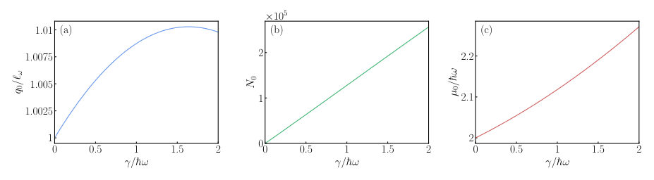
<figcaption class="paper-figure-caption"><b>Fig 1.</b> Figure 1: Projection optimization parameters from Eqs. (14)–(16) for steady-state of vortex solution as function of pumping γ for Γ = 10−4 · ℏ2/m and g = 10−5 · ℏ2/m. Panel (a) shows length scale q0, panel (b) photon number N0, and panel (c) chemical potential µ0.</figcaption>
</figure>
<figure class="paper-figure-card">
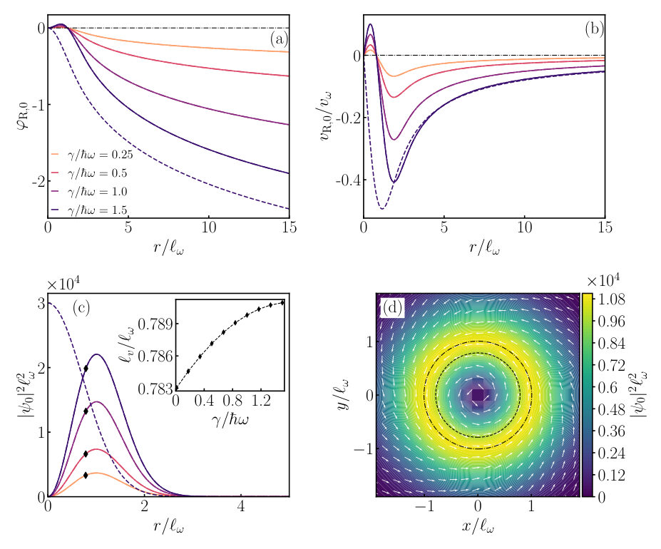
<figcaption class="paper-figure-caption"><b>Fig 2.</b> Figure 2: Panel (a) and (b) show steady-state solution of radial phase and velocity profile according to Eqs. (19) and (20) for different pumping values as well as Γ = 10−4 · ℏ2/m and g = 10−5 · ℏ2/m. In Panel (b) radial velocity profile is given in units of oscillator velocity</figcaption>
</figure>
<figure class="paper-figure-card">
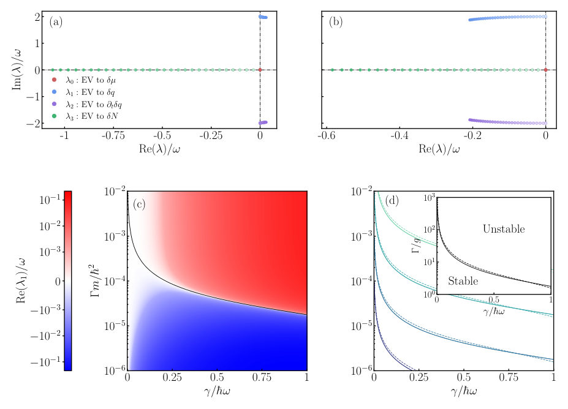
<figcaption class="paper-figure-caption"><b>Fig 3.</b> Figure 3: Panel (a) and (b) show eigenvalues of matrix A as function of pumping strength. Bright colors denote small pumping with smallest value γ/ℏω = 0, whereas strong colors denote large pumping with maximum being γ/ℏω = 1. In both Panels we have g = 10−5·ℏ2/m, whereas in left (right) Panel Γ = 10−3 · ℏ2/m (Γ = 10−7 · ℏ2/m) is used. Panel (c) depicts real part of eigenvalue λ1 in semi-logarithmic scaling for g = 10−5 · ℏ2/m. Black solid line indicates points of vanishing real part. Panel (d) illustrates line of zero real part of eigenvalue λ1 for different interaction strengths; from top to bottom interaction strength values are g = 10−4 · ℏ2/m, 10−5 · ℏ2/m, 10−6 · ℏ2/m, 10−7 · ℏ2/m....</figcaption>
</figure>
<figure class="paper-figure-card">
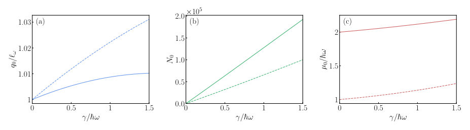
<figcaption class="paper-figure-caption"><b>Fig 4.</b> Figure 4: Vortex-free projection optimization parameters (dashed lines) determined in Eqs. (A.6)–(A.8) and single-vortex optimization parameters following from Eqs. (14)–(16) (solid lines). Evaluated for fixed interaction g = 10−5 · ℏ2/m and losses Γ = 10−4 · ℏ2/m.</figcaption>
</figure>
<figure class="paper-figure-card">
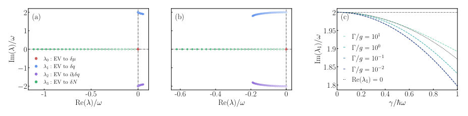
<figcaption class="paper-figure-caption"><b>Fig 5.</b> Figure 5: Panel (a) and (b) show eigenvalues of matrix B as function of pumping strength. Bright colors denote small pumping with smallest value γ/ℏω = 0, whereas strong colors denote large pumping with maximum being γ/ℏω = 1. In both Panels we have g = 10−5 · ℏ2/m, whereas in the left (right) Panel Γ = 10−3 · ℏ2/m (Γ = 10−7 · ℏ2/m) is used. Panel (c) depicts imaginary part of eigenvalue λ1 for different loss-to-interaction rates. The dotted line shows Eq. (A.15) at vanishing Re(λ1).</figcaption>
</figure>
</div>

<p><strong>Summary.</strong> This paper analytically investigates how harmonic trapping regularizes the unphysical vortex core size in photon BECs. Using the complex Gross-Pitaevskii equation and the projection optimization method, the authors derive physical conditions for vortex stability. The work provides a rigorous framework to distinguish between closed and open-dissipative quantum dynamics.</p>
<p><strong>Why it may be interesting.</strong> This work is highly relevant as it applies advanced techniques (projection optimization) to model non-equilibrium, open quantum systems, providing physical insights into topological defects (vortices) in quantum optics platforms.</p>
<details>
<summary>Detailed structure</summary>
<p><strong>Main problem.</strong> The paper addresses the issue of vortex core size regularization in Photon Bose-Einstein Condensates (BECs) where weak interactions cause the healing length to exceed the condensate size in homogeneous systems.</p>
<p><strong>Main result.</strong> Harmonic confinement regularizes the vortex core size to experimentally achievable scales, and the analysis fundamentally distinguishes between closed and open-dissipative quantum systems.</p>
<p><strong>Method.</strong> The authors employ the projection optimization method to solve the complex Gross-Pitaevskii equation (cGPE) for open-dissipative systems, followed by linear stability analysis.</p>
<p><strong>Model / system.</strong> The system models a photon BEC in a dye-filled microcavity, governed by a complex Gross-Pitaevskii equation that includes terms for pumping ($\gamma$) and density-dependent losses ($\Gamma$).</p>
<p><strong>Key observables.</strong> Vortex core size, radial velocity component ($v_R$), condensate width ($q$), and the breathing mode frequency ($\omega_{breath}$).</p>
<p><strong>Important parameters / regimes.</strong> Pumping strength ($\gamma$), loss rate ($\Gamma$), interaction strength ($g$), and the harmonic trap frequency ($\omega$).</p>
<p><strong>Assumptions / limitations.</strong> The analysis relies on the projection optimization method for open-dissipative systems and assumes radial symmetry for the hydrodynamic description.</p>
<p><strong>Figures summary.</strong> Figures compare projection optimization parameters for vortex-free vs. vortex states, show the stability eigenvalues ($\lambda$) dependence on pumping/loss ratios, and illustrate the spatial separation of gain/loss regions and the sign change of the integrated particle flux.</p>
<p><strong>Paper structure.</strong> The paper first introduces the cGPE and the projection optimization method to find approximate solutions. It then analyzes the steady-state vortex and vortex-free solutions, followed by a linear stability analysis to determine the system's dynamical regimes and distinguish between open and closed systems.</p>
</details>
<details>
<summary>Abstract</summary>
<p>Quantized vortices are a hallmark of superfluidity. However, in a photon Bose--Einstein condensate, the photon-photon interaction is so weak that in a homogeneous system the healing length exceeds the experimentally achievable size of the condensate itself. Here we show that a harmonic confinement regularizes the vortex size to experimentally achievable scales. Moreover, such an external confinement closely resembles the standard experimental setup of a pumped dye-filled microcavity. We model the condensate via a complex Gross--Pitaevskii equation and obtain an approximate dynamical single-vortex solution by applying the recently proposed projection optimization method. The latter generalizes the variational approach of closed systems to open-dissipative systems without assuming a specific form for the condensate phase. The radial photon flow, which is characteristic for driven-dissipative systems, yields a definition of the vortex core size based on the competition of gain and loss. However, this condition reproduces the heuristic closed system definition now based on physical grounds. A subsequent linear stability analysis shows that interaction, as well as pumping and loss can drive the system to an unstable regime. In this way one can fundamentally distinguish between closed and open-dissipative systems.</p>
</details>
<p><sub><a href="#top">↑ back to top</a></sub></p>

<p><a id="paper-2608.29858"></a></p>
<h3 id="decay-versus-dephasing-in-rydberg-analog-optimization-exchange-rate-mechanism-and-schedule-design"><a href="http://arxiv.org/abs/2608.29858v1">Decay versus dephasing in Rydberg analog optimization: exchange rate, mechanism, and schedule design</a></h3>
<p><strong>Authors:</strong> Seunghyeon Kim, Junwoo Jung<br>
<strong>Type:</strong> theory · <strong>Category:</strong> other · <strong>PDF:</strong> <a href="https://arxiv.org/pdf/2608.29858v1">https://arxiv.org/pdf/2608.29858v1</a><br>
<strong>Analysis basis:</strong> full PDF text, analyzed in chunks
<strong>Topic relevance:</strong> 🔥 <code>Rydberg arrays</code> <strong>4/5</strong> · <code>analog quantum simulation</code> <strong>3/5</strong> · <code>correlated / nonlocal dissipation</code> <strong>3/5</strong> · <code>methods for driven-dissipative</code> <strong>3/5</strong> · <code>driven-dissipative phase transition</code> <strong>2/5</strong> · <code>Keldysh / 2PI / non-Gaussian methods</code> <strong>1/5</strong> · <code>non-equilibrium universality</code> <strong>1/5</strong> · <code>quantum measurements</code> <strong>1/5</strong></p>
<div class="figure-strip-hint">↔ Scroll figures horizontally</div>
<div class="paper-figures-scroll">
<figure class="paper-figure-card">
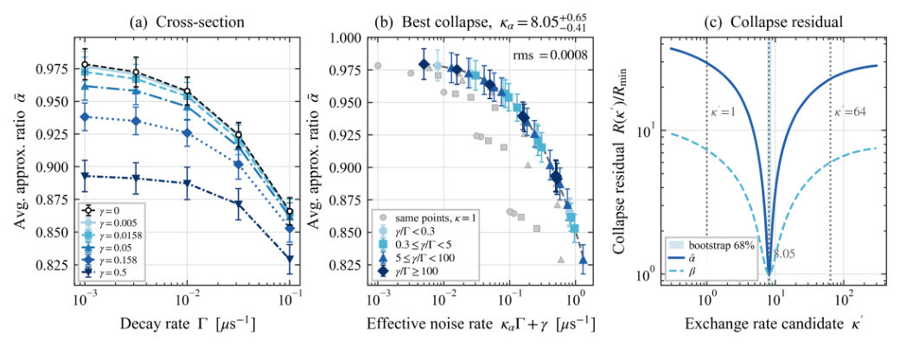
<figcaption class="paper-figure-caption"><b>Fig 1.</b> FIG. 1. The noise map collapses onto u = κΓ + γ. (a) A cross-section of the sweep: ¯α at the per-point optimal annealing time versus the decay rate Γ, at each of the five main-grid dephasing values (light to dark blue) and on the γ = 0 axis (black, open). The curves are nearly parallel on the logarithmic axis, the signature of an additive one-scalar description; the transposed cut (¯α vs γ) is in Appendix C. (b) Data collapse of all 35 points (the 5 × 5 main grid and the two single-channel axes) against u = καΓ+γ at the best fit κα = 8.05+0.65 −0.41: one curve, rms residual 0.0008. Marker shape and shade encode the channel mixture γ/Γ; the gray points are the same data plotted against the...</figcaption>
</figure>
<figure class="paper-figure-card">
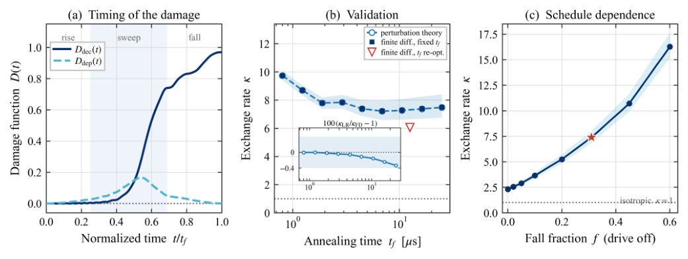
<figcaption class="paper-figure-caption"><b>Fig 2.</b> FIG. 2. Mechanism: when the damage happens, that the calculation is right, and the schedule knob it predicts. (a) The damage functions Ddec(t) and Ddep(t) of Eq. (14), averaged over the 20 production instances at tf = 4.56 µs. Decay damages throughout, maximally at the end (Ddec(tf) = α0); Ddep vanishes to machine precision once the drive is off, identically in the state. The areas are the exposures A and B; κLR = A/B. (b) κ against annealing time: perturbation theory (open circles, bootstrap 68% band) against finite differences of the full solver at the same fixed tf (filled squares); inset, their relative difference, inside 0.4% everywhere. The triangle is the tf-re-optimized finite...</figcaption>
</figure>
<figure class="paper-figure-card">
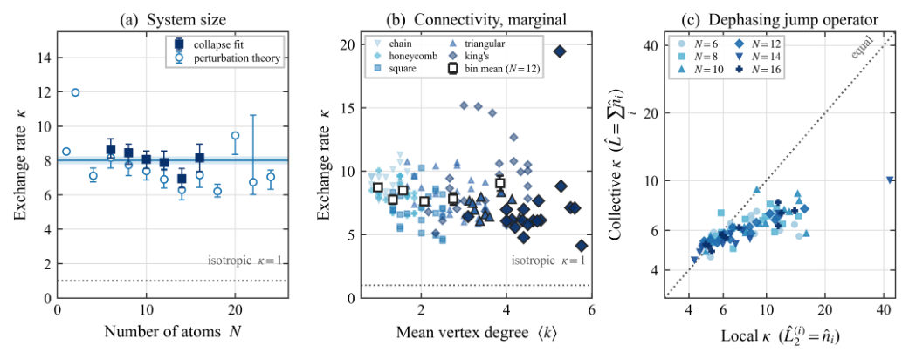
<figcaption class="paper-figure-caption"><b>Fig 3.</b> FIG. 3. Robustness of the exchange rate. One panel per assumption. (a) System size: collapse fits (squares, N = 6–16) against perturbative κ (circles, N = 1–24; the leftmost two are a single atom and a blockaded pair; N = 20 uses the O(Nd) route, which agrees with the matrix route to 3% at N = 18). Band: weighted mean κ = 8.02 ± 0.23, χ2/dof = 1.12. (b) Connectivity, marginal: κ against realized mean degree: diluted lattices at N = 12 (light), dense N = 16–25 lattices (dark edges), bin means (open squares). Flat over the full lever; the conditional analysis behind this flatness is in Appendix D. (c) The dephasing model: local against collective κ per instance, rates matched to the same...</figcaption>
</figure>
<figure class="paper-figure-card">
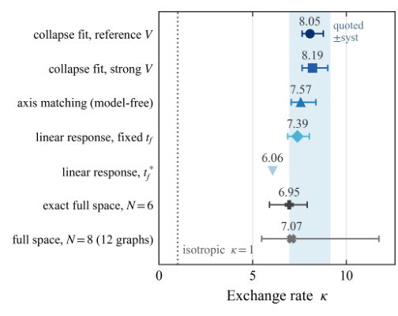
<figcaption class="paper-figure-caption"><b>Fig 4.</b> FIG. 4. Estimator comparison. Independent determina- tions of κ on the production ensemble: collapse fits at two in- teraction strengths, model-free axis matching, linear response at fixed and at re-optimized tf, and the full-space references at N = 6 (exact) and N = 8 (12 graphs, Sec. III C). Error bars: bootstrap 68%; band, the quoted κ = 8.05 ± 1.1 sys- tematic envelope. The spread is the systematic uncertainty of Eq. (18); every estimate is far from κ = 1.</figcaption>
</figure>
<figure class="paper-figure-card">
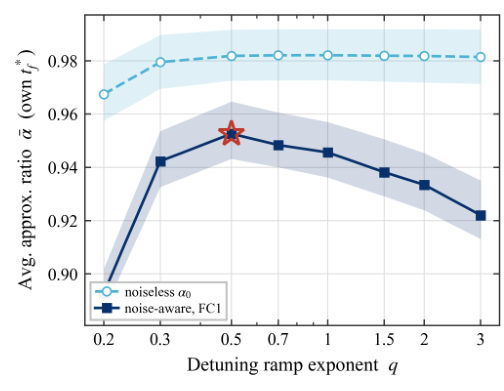
<figcaption class="paper-figure-caption"><b>Fig 5.</b> FIG. 5. The detuning ramp: noise breaks a noise- less near-degeneracy. At the inherited fall, the noise- less α0 (open, dashed) and the FC1 noise-aware prediction α0−AΓ−Bγ (filled) against the sweep exponent q of Eq. (19), each schedule at its own re-optimized t∗ f; bands, bootstrap 68% over the 20 production instances. The noiseless crite- rion is flat to 3 × 10−4 across q = 0.5–1 and cannot choose a ramp; the noise-aware objective selects the interior optimum q = 0.5 (star) in all 400 bootstrap resamples, by a margin twenty times that spread.</figcaption>
</figure>
</div>

<p><strong>Summary.</strong> This paper rigorously analyzes quantum optimization in Rydberg atom systems by separating spontaneous decay ($\Gamma$) from dephasing ($\gamma$) noise. It demonstrates that the performance degradation scales linearly with a weighted sum of these two rates, $\kappa\Gamma + \gamma$, rather than their simple sum. This finding is vital for developing noise-aware quantum control protocols for trapped-ion and Rydberg quantum processors.</p>
<p><strong>Why it may be interesting.</strong> This work provides crucial, quantitative guidance for designing noise-resilient quantum algorithms on Rydberg platforms by providing a precise, non-trivial scaling law for decoherence damage.</p>
<details>
<summary>Detailed structure</summary>
<p><strong>Main problem.</strong> The paper addresses the critical need to distinguish between the effects of spontaneous decay ($\Gamma$) and pure dephasing ($\gamma$) in quantum optimization protocols, rather than treating them as a single combined decoherence rate.</p>
<p><strong>Main result.</strong> The performance metric collapses onto a linear combination of the two noise rates, $ar{\alpha} \propto \kappa\Gamma + \gamma$, where the coefficient $\kappa$ is protocol-dependent, showing that the simple assumption of $\Gamma + \gamma$ is inaccurate.</p>
<p><strong>Method.</strong> The authors use numerical simulations across the $(\Gamma, \gamma)$ plane, employing first-order perturbation theory and analyzing the mean approximation ratio ($ar{\alpha}$) derived from the Lindblad master equation.</p>
<p><strong>Model / system.</strong> The physical system is based on Rydberg atoms used to solve the unit-disk maximum independent set problem via quantum annealing heuristics. Decoherence is modeled using the Lindblad equation incorporating independent channels for decay ($\Gamma$) and dephasing ($\gamma$).</p>
<p><strong>Key observables.</strong> Mean approximation ratio ($ar{\alpha}$), the exchange rate ($\kappa$), and the dependence of $ar{\alpha}$ on the combination $u = \kappa\Gamma + \gamma$.</p>
<p><strong>Important parameters / regimes.</strong> Decay rate ($\Gamma$), dephasing rate ($\gamma$), annealing time, and the protocol-dependent exchange rate ($\kappa$).</p>
<p><strong>Assumptions / limitations.</strong> The analysis relies on first-order perturbation theory and assumes that the performance metric can be accurately modeled by a linear combination of the noise parameters, $u = \kappa\Gamma + \gamma$.</p>
<p><strong>Figures summary.</strong> The notes mention figures comparing dephasing exposure vs. coherence integral and shot cost analysis, suggesting quantitative comparisons of noise damage.</p>
<p><strong>Paper structure.</strong> The paper progresses by first establishing the inadequacy of single-parameter noise models, then deriving the linear relationship $ar{\alpha} \propto \kappa\Gamma + \gamma$ using perturbation theory, and finally analyzing how the protocol schedule can be tuned to mitigate the damage from both channels independently.</p>
</details>
<details>
<summary>Abstract</summary>
<p>Numerical studies of noisy Rydberg-atom optimization almost universally compress decoherence into a single scalar, silently pricing spontaneous decay ($Γ$) and dephasing ($γ$) alike. We treat the two as independent axes, mapping a quantum-annealing heuristic for unit-disk maximum independent set on 20 random $N=10$ graphs across the $(Γ,γ)$ plane, with the annealing time re-optimized at every point. The mean approximation ratio does collapse onto one scalar, but onto $u=κΓ+γ$ with $κ=8.05\pm0.5$ (stat) $\pm1.1$ (syst); the isotropic $Γ+γ$ fails by a factor of 30 in residual. First-order perturbation theory reproduces $κ$ from noiseless propagation alone and gives the mechanism: the objective is diagonal in the basis of the dephasing operator, so dephasing cannot change the answer once the drive is off, and a single driven atom already has $κ\simeq8.5$. The exchange rate is thus a property of the protocol as much as of the platform: the ramp-down fraction moves it between 2.3 and 16.3. At a fixed schedule it is stable across system sizes, interaction strengths, and estimators. Because the whole cost model is noiseless, a schedule can be tuned to a device's channel mixture without any noisy simulation: jointly tuning the drive ramp-down and the sweep's detuning ramp recovers about a third of the Markovian damage at no hardware cost, and the ramp the noise-aware objective selects is not the one noiseless optimization would choose. Per unit rate decay is eightfold the dearer channel, but the measured $T_1$ enters weighted by its branching ratio to the ground state ($b\approx0.4$ for the calibrated device), which leaves the two Lindblad channels comparably costly at a present-day operating point. One-parameter noise models remain serviceable, provided the parameter is $u$.</p>
</details>
<p><sub><a href="#top">↑ back to top</a></sub></p>

<p><a id="paper-2608.30681"></a></p>
<h3 id="entanglement-enabled-criticality-in-one-dimensional-quantum-contact-process"><a href="http://arxiv.org/abs/2608.30681v1">Entanglement-enabled Criticality in One-dimensional Quantum Contact Process</a></h3>
<p><strong>Authors:</strong> Ya-Xin Xiang, Tianyi Yan, Weibin Li, Yu-Qiang Ma<br>
<strong>Type:</strong> theory · <strong>Category:</strong> statistical mechanics · <strong>PDF:</strong> <a href="https://arxiv.org/pdf/2608.30681v1">https://arxiv.org/pdf/2608.30681v1</a><br>
<strong>Analysis basis:</strong> full PDF text, analyzed in chunks
<strong>Topic relevance:</strong> 🔥 <code>driven-dissipative phase transition</code> <strong>4/5</strong> · 🔥 <code>non-equilibrium universality</code> <strong>4/5</strong> · <code>Keldysh / 2PI / non-Gaussian methods</code> <strong>3/5</strong> · <code>correlated / nonlocal dissipation</code> <strong>3/5</strong> · <code>methods for driven-dissipative</code> <strong>3/5</strong> · <code>quantum measurements</code> <strong>1/5</strong></p>
<div class="figure-strip-hint">↔ Scroll figures horizontally</div>
<div class="paper-figures-scroll">
<figure class="paper-figure-card">
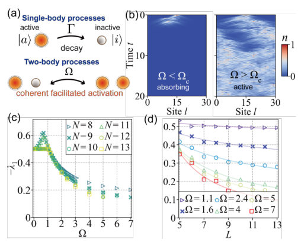
<figcaption class="paper-figure-caption"><b>Fig 1.</b> FIG. 1. (a) Schematic of the quantum contact process. An inactive site (state |i⟩, gray sphere) can be activated via coher- ent facilitated activation by a neighboring active state |a⟩(red sphere) at rate Ω. Active sites spontaneously decay back to |i⟩at rate Γ. (b) Spatiotemporal profile of the active density n for different facilitation rates Ω. Starting at a fully active state, small Ω&lt; Ωc leads to a rapid decay into the absorbing state, while large Ω&gt; Ωc sustains a long-lived active state. The critical Ωc = 6.5 marks the boundary between the two dynamical regimes (see details in the main text). (c) Spectral gap versus Ωfor different system sizes N. The gap decreases with both increasing...</figcaption>
</figure>
<figure class="paper-figure-card">
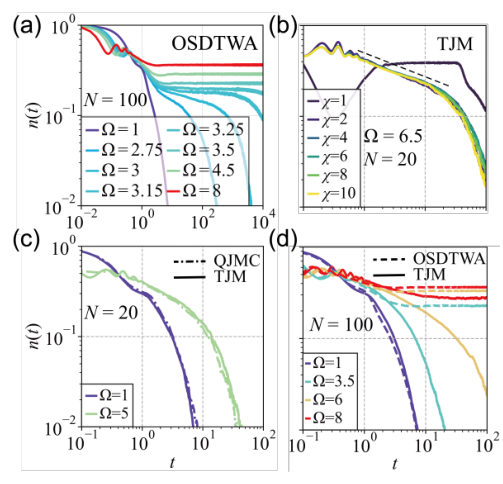
<figcaption class="paper-figure-caption"><b>Fig 2.</b> FIG. 2. Decay dynamics of the active density n(t) obtained from different methods. (a) Semiclassical open-system dis- crete truncated Wigner approximation (OSDTWA) results for N = 100 at various facilitation rates Ω. For Ω≤3.15, n(t) decays to the absorbing state. For Ω≥3.15, a long-lived active plateau emerges. (b) Convergence of the tensor jump method (TJM) with various bond dimensions χ at Ω= 6.5 and N = 20. The black dashed line marks a power-law decay. (c) Benchmark of TJM (χ = 4) against exact quantum-jump Monte Carlo (QJMC) simulations for Ω= 1, 5 and N = 20. (d) Comparison of TJM (solid lines) and OSDTWA (dashed lines) for N = 100 at four representative values of Ω.</figcaption>
</figure>
<figure class="paper-figure-card">
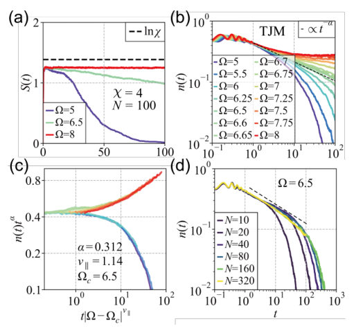
<figcaption class="paper-figure-caption"><b>Fig 3.</b> FIG. 3. Decay dynamics starting with a fully active state obtained from TJM. (a) Entanglement entropy S(t) and (b) active density n(t) for N = 100 at various Ω. A power-law de- cay n(t) ∝t−α (black dashed line) emerges at Ω= 6.5, yield- ing the critical point Ωc = 6.5 and the exponent α = 0.312. (c) Determination of the exponent ν∥from data collapse of n(t)tα versus t|Ω−Ωc|ν∥. With ν∥= 1.14, all curves collapse onto two different branches depending on the sign of Ω−Ωc. (d) active density n(t) at Ω= 6.5 at various system size N. As N increases, the curves converge to the universal power law n(t) ∝t−α (black dashed line).</figcaption>
</figure>
<figure class="paper-figure-card">
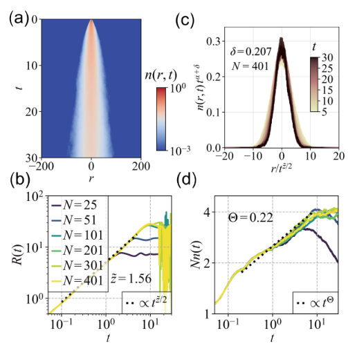
<figcaption class="paper-figure-caption"><b>Fig 4.</b> FIG. 4. Spreading dynamics starting from a seed initial state at the center of the chain, obtained from TJM at the critical point Ω= 6.5. (a) Ensemble average of the active density n(r, t) for N = 401, where r ∈[−N/2, N/2] is the distance from the seed. (b) Mean-squared displacement R(t) of the active cluster for different system sizes N. All curves ex- hibit a universal power-law growth R(t) ∝t˜z/2 (black dashed line), yielding the exponent ˜z = 1.56. (c) Collapse of the spatial profiles n(r, t) at different times t (color-coded) for N = 401. The profiles collapse onto a single curve when plotted as n(r, t)tα+δ versus r/t˜z/2, yielding the exponent δ = 0.203. (d) Total active density Nn(t)...</figcaption>
</figure>
</div>

<p><strong>Summary.</strong> This work analyzes the quantum phase transition in the 1D Quantum Contact Process, finding it to be a continuous transition. The authors prove that weak quantum entanglement is crucial for obtaining the correct critical exponents, showing that semiclassical methods fail by predicting an incorrect first-order transition. It underscores the fundamental role of entanglement in understanding quantum non-equilibrium dynamics.</p>
<p><strong>Why it may be interesting.</strong> It provides a rigorous demonstration of how quantum coherence and entanglement are necessary ingredients to correctly describe non-equilibrium phase transitions in open quantum systems, distinguishing quantum criticality from classical or mean-field predictions.</p>
<details>
<summary>Detailed structure</summary>
<p><strong>Main problem.</strong> The paper investigates the nature of the absorbing-state phase transition (APT) in the 1D Quantum Contact Process (QCP) and determines the essential role of quantum entanglement in this transition.</p>
<p><strong>Main result.</strong> The 1D QCP undergoes a continuous APT with critical exponents distinct from the classical case, demonstrating that weak entanglement is indispensable for capturing the correct critical behavior.</p>
<p><strong>Method.</strong> The study employs a combination of Liouvillian spectral analysis, Tensor Jump Method (TJM), and comparison with semiclassical approximations like the Truncated Wigner Approximation (OSDTWA).</p>
<p><strong>Model / system.</strong> The system is the Quantum Contact Process (QCP) on a 1D lattice, whose dynamics are governed by a Lindblad master equation involving coherent activation and dissipative processes.</p>
<p><strong>Key observables.</strong> Active density ($n$), Liouvillian spectral gap, and entanglement entropy ($S(t)$).</p>
<p><strong>Important parameters / regimes.</strong> Facilitation rate ($\Omega$) and the bond dimension ($\chi$) used in the TJM.</p>
<p><strong>Assumptions / limitations.</strong> The analysis compares results obtained using entanglement-preserving methods (TJM/QJMC) against those that neglect entanglement (OSDTWA).</p>
<p><strong>Figures summary.</strong> Figures illustrate the transition boundary ($\Omega_c$), the spectral gap behavior, and compare the time decay of the active density $n(t)$ across different methods, highlighting the failure of semiclassical approaches.</p>
<p><strong>Paper structure.</strong> The paper establishes the QCP model, analyzes the transition using multiple advanced techniques, contrasts the results with semiclassical limits, and concludes by quantifying the necessity of entanglement for correct critical exponents.</p>
</details>
<details>
<summary>Abstract</summary>
<p>The contact process is a paradigmatic example of nonequilibrium dynamics, with broad applications ranging from chemistry to sociology. Its quantum counterpart, the quantum contact process (QCP), extends the classical model to include coherent processes. Despite sustained interest, the nature of the transition in the one-dimensional (1D) QCP remains debatable. Here, combining Liouvillian spectral analysis, the tensor jump method, exact quantum jump Monte Carlo, and truncated Wigner simulations, we show that 1D QCP undergoes a continuous absorbing-state phase transition, with critical exponents distinct from the classical case. We further find Liouvillian gap closes well below the critical point, highlighting that spectral gap analysis alone cannot distinguish a phase transition from metastability in the QCP. Crucially, the 1D QCP is weakly entangled, yet even this weak entanglement is indispensable for capturing the correct critical behavior, whereas semiclassical methods artificially stabilize the active state and predict a spurious first-order transition. Our work establishes the quantum origin of the phase transition in the 1D QCP and underscores the essential role of entanglement in dissipative quantum many-body systems.</p>
</details>
<p><sub><a href="#top">↑ back to top</a></sub></p>

<p><a id="paper-2608.29684"></a></p>
<h3 id="analytical-diagonalization-of-the-open-boundary-bosonic-kitaev-chain-an-asymmetric-plane-wave-ansatz-approach"><a href="http://arxiv.org/abs/2608.29684v1">Analytical diagonalization of the open-boundary bosonic Kitaev chain: An asymmetric plane-wave ansatz approach</a></h3>
<p><strong>Authors:</strong> Ning Wu, Wen-Long You<br>
<strong>Type:</strong> theory · <strong>Category:</strong> other · <strong>PDF:</strong> <a href="https://arxiv.org/pdf/2608.29684v1">https://arxiv.org/pdf/2608.29684v1</a><br>
<strong>Analysis basis:</strong> full PDF text, analyzed in chunks
<strong>Topic relevance:</strong> 🔥 <code>methods for driven-dissipative</code> <strong>4/5</strong> · <code>Keldysh / 2PI / non-Gaussian methods</code> <strong>3/5</strong> · <code>driven-dissipative phase transition</code> <strong>3/5</strong> · <code>non-equilibrium universality</code> <strong>2/5</strong> · <code>analog quantum simulation</code> <strong>1/5</strong> · <code>correlated / nonlocal dissipation</code> <strong>1/5</strong> · <code>quantum measurements</code> <strong>1/5</strong></p>
<div class="figure-strip-hint">↔ Scroll figures horizontally</div>
<div class="paper-figures-scroll">
<figure class="paper-figure-card">
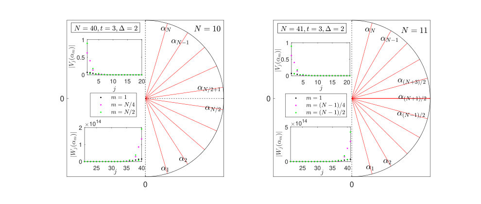
<figcaption class="paper-figure-caption"><b>Fig 1.</b> FIG. 1: Allowed values of α in the plane-wave ansatz. (a) N = 10, (b) N = 11. For even N, all the αm’s are nonzero; while for odd N there exists a zero mode with α(N+1)/2 = 0. The insets show examples of the absolute values of Vj(αm) and Wj(αm), which are localized near the left and right ends of the chain, respectively.</figcaption>
</figure>
</div>

<p><strong>Summary.</strong> This paper presents an alternative, purely algebraic method to diagonalize the open-boundary bosonic Kitaev chain by employing an asymmetric plane-wave ansatz. The technique solves the associated non-Hermitian eigenvalue problem and explicitly constructs the Bogoliubov quasiparticle operators. It demonstrates that this method is generalizable to other bosonic pairing systems with complex boundary conditions.</p>
<p><strong>Why it may be interesting.</strong> The method provides a powerful, purely algebraic tool for exactly solving non-Hermitian Hamiltonians arising in open quantum systems, which is highly relevant for understanding boundary effects in condensed matter models.</p>
<details>
<summary>Detailed structure</summary>
<p><strong>Main problem.</strong> The paper aims to analytically diagonalize the open-boundary bosonic Kitaev chain (OBKC) using a purely algebraic method that avoids the standard position-momentum representation.</p>
<p><strong>Main result.</strong> The authors successfully derive the explicit diagonal form of the Hamiltonian and construct the physical Bogoliubov quasiparticle operators, confirming the equivalence of the new method to existing solutions.</p>
<p><strong>Method.</strong> The core technique involves casting the Hamiltonian into a quadratic form, solving the associated non-Hermitian eigenvalue problem using an asymmetric plane-wave ansatz, and resolving the resulting degeneracies via bosonic commutation relations.</p>
<p><strong>Model / system.</strong> The system is the bosonic Kitaev chain with open boundary conditions, treated as an effective Hamiltonian for a driven-dissipative open system. The analysis is generalized to other bosonic pairing models with inhomogeneous terms.</p>
<p><strong>Key observables.</strong> Eigenvalues (single-particle energies, $\Lambda_k$), eigenvectors ($V_j(\alpha)$), and the diagonalized Hamiltonian ($H_D$).</p>
<p><strong>Important parameters / regimes.</strong> Number of sites ($N$), hopping strength ($t$), pairing strength ($\Delta$), and the pseudo-momenta ($p, p'$).</p>
<p><strong>Assumptions / limitations.</strong> The primary assumption is the validity of the asymmetric plane-wave ansatz for solving the left eigenvalue problem, and the method assumes $\Lambda 
eq 0$ for the main derivation.</p>
<p><strong>Figures summary.</strong> Figure 1 illustrates the allowed values of the parameter $\alpha$ for finite $N$, showing the existence of a zero mode for odd $N$.</p>
<p><strong>Paper structure.</strong> The paper progresses by first reviewing the problem, then developing the algebraic framework using the asymmetric plane-wave ansatz to solve the eigenvalue problem, deriving the quantization conditions, and finally constructing the diagonal Hamiltonian and generalizing the method to inhomogeneous pairing models.</p>
</details>
<details>
<summary>Abstract</summary>
<p>The bosonic Kitaev chain under open boundary conditions has attracted recent attention due to its realization in driven-dissipative systems and its intriguing non-Hermitian boundary physics. The model is known to be solvable via local squeezing transformations in the position-momentum representation. In this paper, we present an alternative, purely algebraic solution that relies entirely on the standard bosonic Bogoliubov transformation. For an $N$-site chain, we propose an asymmetric plane-wave ansatz with unequal left- and right-moving momenta to analytically solve the associated $2N\times 2N$ non-Hermitian ``associated matrix". The left eigenvalue problem yields $N$ distinct eigenvalues, each of which is twofold degenerate. By carefully resolving these degeneracies using the bosonic commutation relations, we construct the $N$ physical Bogoliubov quasiparticle operators. The construction reveals non-uniquenesses that in special cases exactly mirror the freedom in the local squeezing transformations of the original approach. The diagonal form of the Hamiltonian is obtained explicitly and is shown to be equivalent to the original Hamiltonian. The proposed asymmetric plane-wave ansatz and degeneracy-resolution technique are not limited to the present model and can be generalized to other bosonic pairing systems, including those with inhomogeneous pairing or hopping terms.</p>
</details>
<p><sub><a href="#top">↑ back to top</a></sub></p>

<p><a id="paper-2608.29122"></a></p>
<h3 id="light-induced-nonconservative-static-forces-in-many-body-systems"><a href="http://arxiv.org/abs/2608.29122v1">Light-induced nonconservative static forces in many-body systems</a></h3>
<p><strong>Authors:</strong> Jinze Li, Xuemei Yang, Zhiyuan Sun<br>
<strong>Type:</strong> theory · <strong>Category:</strong> other · <strong>PDF:</strong> <a href="https://arxiv.org/pdf/2608.29122v1">https://arxiv.org/pdf/2608.29122v1</a><br>
<strong>Analysis basis:</strong> full PDF text, analyzed in chunks
<strong>Topic relevance:</strong> 🔥 <code>Keldysh / 2PI / non-Gaussian methods</code> <strong>4/5</strong> · <code>driven-dissipative phase transition</code> <strong>3/5</strong> · <code>Frenkel-Kontorova</code> <strong>2/5</strong> · <code>methods for driven-dissipative</code> <strong>2/5</strong> · <code>non-equilibrium universality</code> <strong>2/5</strong> · <code>analog quantum simulation</code> <strong>1/5</strong> · <code>correlated / nonlocal dissipation</code> <strong>1/5</strong></p>
<div class="figure-strip-hint">↔ Scroll figures horizontally</div>
<div class="paper-figures-scroll">
<figure class="paper-figure-card">
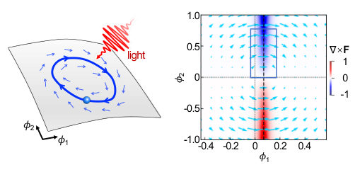
<figcaption class="paper-figure-caption"><b>Fig 1.</b> FIG. 1. Left: Schematic of light-induced nonconservative force field (blue arrows) on the manifold of slow degrees of freedom. The blue trajectory denotes a limit cycle. Right: Light-induced effective static force field on the slow Raman modes 𝜙1 and 𝜙2 in a nonlinear phononic system. The arrows indicate the local direction and magnitude of the force while the color map shows its local curl. The bold dashed line indicates the resonance configuration 𝜔2 IR(1 −𝜙1) = 𝜔2.</figcaption>
</figure>
<figure class="paper-figure-card">
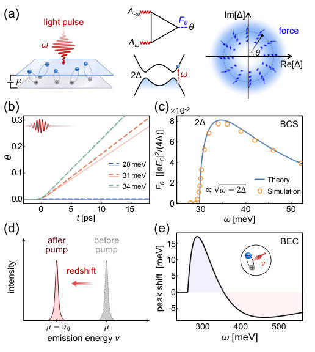
<figcaption class="paper-figure-caption"><b>Fig 2.</b> FIG. 2. (a) Left: schematic of a light pulse driving an electron- hole bilayer realization of EI. Middle: the triangular diagram for the light-induced force 𝐹𝜃on the order parameter phase (top) and the resonant interband excitation (bottom) responsible for it. Right: light- induced force (arrows) on the order parameter shown in the complex order-parameter plane, where the color map shows the free-energy landscape without the drive. (b) Simulated evolution of the phase in a BCS-type EI after a light pulse (inset) centered at time zero for three different central frequencies, with the same pulse duration 𝜏= 1 ps and peak field 𝐸0 = 300 V/cm. The solid/dashed curves show the results with...</figcaption>
</figure>
<figure class="paper-figure-card">

<figcaption class="paper-figure-caption"><b>Fig 3.</b> Fig. 2(a)) and enhances the gap in the BEC regime (𝐸G &gt; 0). In the following, we take the ground state Δ to be a real positive number without loss of generality.</figcaption>
</figure>
<figure class="paper-figure-card">
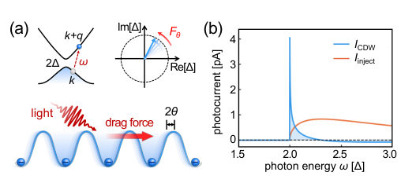
<figcaption class="paper-figure-caption"><b>Fig 4.</b> FIG. 3. (a) Bottom panel illustrates the light-induced drag of a one-dimensional CDW with electrons (spheres) sitting in the periodic mean-field potential (cyan curve). The phase 𝜃of the CDW order parameter sets the spatial position of the condensate. The top left depicts the resonant interband excitations responsible for the drag force 𝐹𝜃. The top right shows this force on the complex plane of the order parameter. (b) The blue curve is the NCSF-induced photo- current from CDW sliding as a function of light frequency (in units of the CDW gap Δ) and the orange curve is the quasiparticle injection current. The obliquely incident p-polarized light has a fixed electric field 𝐸0 = 104 V/cm and...</figcaption>
</figure>
</div>

<p><strong>Summary.</strong> This paper investigates how light can exert nonconservative static forces on collective order parameters in quantum materials like excitonic insulators and CDW systems. By linking these forces to optical absorption, the authors predict measurable effects, such as shifts in photon emission peaks or the generation of a DC current. The methodology relies on advanced many-body theoretical techniques applied to driven quantum systems.</p>
<p><strong>Why it may be interesting.</strong> This work provides a concrete theoretical framework for understanding how light-matter interaction, specifically through dissipative processes, can induce directed, non-equilibrium motion in condensed matter order parameters, bridging quantum optics and solid-state physics.</p>
<details>
<summary>Detailed structure</summary>
<p><strong>Main problem.</strong> The study focuses on light-induced nonconservative static forces (NCSFs) acting on slow collective degrees of freedom within quantum many-body systems.</p>
<p><strong>Main result.</strong> The light field generates nonconservative forces rooted in dissipation (optical absorption), which drive measurable phenomena like phase acceleration in excitonic insulators or DC current generation in charge density waves.</p>
<p><strong>Method.</strong> The analysis employs advanced diagrammatic techniques (e.g., triangular diagrams) within a Keldysh formalism to derive effective equations of motion and force terms for the order parameter phase.</p>
<p><strong>Model / system.</strong> The work examines general quantum many-body systems, specifically modeling excitonic insulators (EI) and materials exhibiting incommensurate charge density waves (CDW) driven by periodic light fields.</p>
<p><strong>Key observables.</strong> Phase winding velocity (measured via photon emission peak shift in EIs) and DC electric current ($I_{CDW}$) in CDW systems.</p>
<p><strong>Important parameters / regimes.</strong> Optical gap ($  ilde{E}_G$), light frequency ($\omega$), and the coupling strength related to dissipation.</p>
<p><strong>Assumptions / limitations.</strong> The NCSF is explicitly linked to dissipation (optical absorption), and the analysis often involves approximations in the slow-energy limit.</p>
<p><strong>Figures summary.</strong> Figures illustrate the schematic of the NCSF field, the simulated phase evolution in EIs showing peak shifts, and the theoretical diagrams contributing to the force and current in CDW systems.</p>
<p><strong>Paper structure.</strong> The paper progresses from general concepts of NCSFs to specific derivations for EIs (phase dynamics) and then details the rigorous calculation of the force and current in CDW systems using Keldysh formalism and diagrammatic expansion.</p>
</details>
<details>
<summary>Abstract</summary>
<p>In a quantum many-body system, a periodic drive can often generate effective static forces on the slow collective degrees of freedom. We study the static forces generated by light on electronic order parameters in solid-state systems. We show that the forces can have nonconservative components that originate from dissipation, i.e., optical absorption. This effect is demonstrated in two nontrivial examples. In excitonic insulators, via interband excitations, the light field generates a nonconservative force on the phase of the excitonic order parameter. This force leads to an acceleration of the phase, which manifests as a shift of the photon emission peak from an exciton condensate. In materials with an incommensurate charge density wave, a propagating light field generates a nonconservative force on the phase of its order parameter. It drives the charge density wave into sliding motion, leading to a DC electric current via topological Thouless pumping.</p>
</details>
<p><sub><a href="#top">↑ back to top</a></sub></p>

<p><a id="paper-2608.29435"></a></p>
<h3 id="parametric-amplification-in-a-kerr-oscillator-based-on-ne-fib-nanobridges"><a href="http://arxiv.org/abs/2608.29435v1">Parametric amplification in a Kerr Oscillator based on Ne FIB Nanobridges</a></h3>
<p><strong>Authors:</strong> Parth Bhandari, Laith Meti, Gemma Chapman, Edward Romans, John Gallop, Ling Hao<br>
<strong>Type:</strong> both · <strong>Category:</strong> quantum information and computing · <strong>PDF:</strong> <a href="https://arxiv.org/pdf/2608.29435v1">https://arxiv.org/pdf/2608.29435v1</a><br>
<strong>Analysis basis:</strong> full PDF text, analyzed in chunks
<strong>Topic relevance:</strong> 🔥 <code>driven-dissipative phase transition</code> <strong>4/5</strong> · <code>QC/QI experiment</code> <strong>3/5</strong> · <code>Keldysh / 2PI / non-Gaussian methods</code> <strong>2/5</strong> · <code>methods for driven-dissipative</code> <strong>2/5</strong> · <code>non-equilibrium universality</code> <strong>1/5</strong> · <code>quantum measurements</code> <strong>1/5</strong> · <code>quantum optics experiment</code> <strong>1/5</strong></p>
<div class="figure-strip-hint">↔ Scroll figures horizontally</div>
<div class="paper-figures-scroll">
<figure class="paper-figure-card">
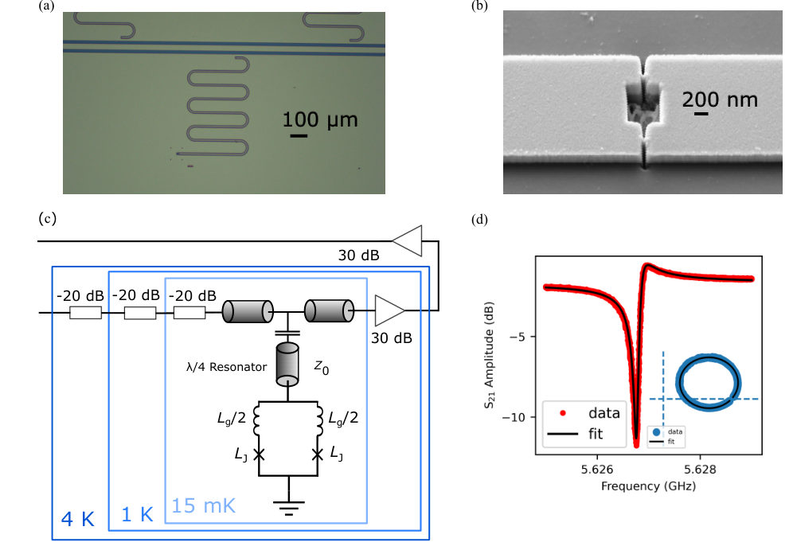
<figcaption class="paper-figure-caption"><b>Fig 1.</b> Figure 1: (a) Optical image of a subsection of the chip showing three out of six resonators coupled to the central feedline. (b) SEM image of a Ne FIB DC SQUID embedded at the end of a resonator. (c) Schematic of the measurement setup showing attenuation and amplification at different stages. 𝐿g is the total geometric loop inductance of the SQUID and 𝐿J is the Josephson inductance of each nanobridge. (d) Plot showing the resonator transmission spectrum for 𝑃pr =-105 dBm with the data shown in red and the fit shown in black. The inset shows the circle fit in the complex plane, with the data shown in blue and the fit shown in black. The fit corresponds to a resonant frequency of 5.6268 GHz,...</figcaption>
</figure>
<figure class="paper-figure-card">
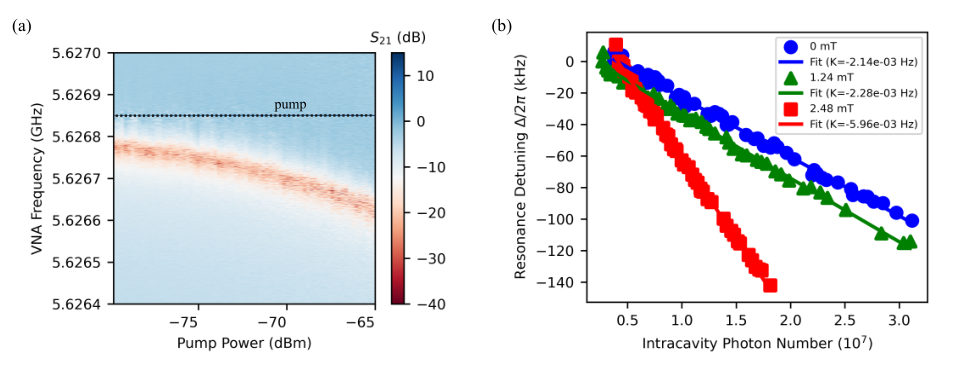
<figcaption class="paper-figure-caption"><b>Fig 2.</b> Figure 2: (a) A colour plot showing the transmission spectrum (S21) obtained for resonator with increasing pump power. The pump is annotated with a dotted black line, and the dip represented in red shows the shift in the resonant frequency of the circuit. (b) Plot showing the detuning of the resonant frequency for resonator with an increase in intracavity photon numbers at different applied fields. Here Δ = 𝜔𝑠−𝜔0, where 𝜔s is the resonant frequency of the circuit with intracavity photon number 𝑛c. The experimental data are plotted with scatter points and fits are shown by solid lines. The obtained fits represent good agreement with the observed detuning of the resonant frequency.</figcaption>
</figure>
<figure class="paper-figure-card">

<figcaption class="paper-figure-caption"><b>Fig 3.</b> Figure 3: (a) A colour plot showing the transmission spectrum of resonator with an increase in pump power for a red-detuned signal. The resonant frequency shows an initial slight shift as pump power increases and then a jump below the pump frequency and emergence of net idler gain. (b) A line plot showing the resonant dip and the idler gain for 𝑃p = −55 dBm. (c) A colour plot showing the compiled results from the spectrum analyser measurements, where the pump tone was fixed (vertical line), and the idler frequency (negative slope line) changes according to the degenerate four wave mixing process as the signal tone (positive slope line) is swept.</figcaption>
</figure>
<figure class="paper-figure-card">

<figcaption class="paper-figure-caption"><b>Fig 4.</b> Figure 4: (a) A colour plot showing the measured transmission spectrum for resonator as the pump frequency is decreased in steps of 6 kHz starting from the right-hand side of the plot. As the pump frequency is decreased the idler appears and its frequency (peak) tracks the signal frequency (dip) until a maximum gain is reached. Beyond that point the resonator snaps back to a single resonant dip. (b) A line plot showing the maximum gain of 15 dB (with respect to the baseline at -5 dB) with a bandwidth of 300 kHz. (c) The solution of the analytical model discussed in the main text for 𝜔0/2𝜋= 5.62675 GHz, 𝜅int = 38 kHz, 𝜅ext = 120 kHz, 𝑃p = −60 dBm, and 𝐾= −2.14 mHz/photon. The solution has...</figcaption>
</figure>
</div>

<p><strong>Summary.</strong> This paper reports on the experimental demonstration of parametric amplification in a superconducting Kerr Oscillator built using Nb nanobridges. By employing two-tone spectroscopy, the authors characterized the non-linear response and achieved a maximum gain of 15 dB. This work validates the use of such superconducting circuits for advanced quantum sensing and readout applications.</p>
<p><strong>Why it may be interesting.</strong> This work directly addresses the engineering of non-linear elements in superconducting circuits, which is fundamental for building quantum transducers, quantum memories, and high-sensitivity quantum sensors.</p>
<details>
<summary>Detailed structure</summary>
<p><strong>Main problem.</strong> The paper investigates the feasibility and performance of parametric amplification within a Kerr Oscillator circuit, a key component for quantum sensing and readout.</p>
<p><strong>Main result.</strong> The authors successfully demonstrated parametric gain up to 15 dB using a superconducting circuit containing Nb nanobridges, confirming the model's predictions.</p>
<p><strong>Method.</strong> The study combines two-tone spectroscopy measurements with theoretical modeling based on the driven Kerr nonlinear oscillator equation of motion.</p>
<p><strong>Model / system.</strong> The physical system is an Nb-based CPW resonator embedded with a DC SQUID containing Nb nanobridges. The dynamics are modeled by a Kerr oscillator Hamiltonian and its corresponding equation of motion.</p>
<p><strong>Key observables.</strong> Maximum amplification (15 dB), Kerr factor (K), resonant frequency, and the appearance of an idler mode.</p>
<p><strong>Important parameters / regimes.</strong> Operating temperature (15 mK), magnetic field tolerance (up to 2.48 mT), and the ratio of Kerr nonlinearity to linewidth (|K|/$\kappa$).</p>
<p><strong>Assumptions / limitations.</strong> The analysis assumes the weakly nonlinear regime ($|K|/\kappa < 1$) and that the feedline supports bidirectional propagation for the EOM derivation.</p>
<p><strong>Figures summary.</strong> Figures show the resonator transmission spectrum fitted to extract parameters, and spectral evolution plots demonstrating the gain profile as the pump frequency is swept.</p>
<p><strong>Paper structure.</strong> The paper first establishes the theoretical framework using the Kerr oscillator model, then details the experimental measurement techniques (two-tone spectroscopy) to estimate the Kerr factor, and finally demonstrates parametric gain by sweeping the pump frequency.</p>
</details>
<details>
<summary>Abstract</summary>
<p>Superconducting circuits play a crucial role in the advancement of quantum computing and quantum sensing. Typically such circuits require the presence of a non-linear element, where the engineered anharmonicity (Kerr factor) and resonant linewidth determine the potential applications of the circuit. In this work we have fabricated Nb-based CPW resonators embedded with a DC SQUID incorporating Nb nanobridges as the weak links. We use two-tone spectroscopy to study the non-linear behaviour of the device at 15 mK up to a field of 2.48 mT. Under the application of a blue-detuned pump, the device shows a decrease in the resonant frequency which is used to estimate the Kerr factor. We further apply a red-detuned pump to go beyond the bifurcation threshold and observe the appearance of an additional idler mode with net gain. The gain of the device was maximized by further decreasing the pump frequency, showing a maximum amplification of 15 dB. Finally, we show agreement between the Kerr non-linear oscillator model and the measured transmission spectrum, and highlight further design modifications to improve the gain and bandwidth of such devices.</p>
</details>
<p><sub><a href="#top">↑ back to top</a></sub></p>

<p><a id="paper-2608.31165"></a></p>
<h3 id="efficient-search-for-excitable-zero-modes-in-constrained-systems"><a href="http://arxiv.org/abs/2608.31165v1">Efficient search for excitable zero-modes in constrained systems</a></h3>
<p><strong>Authors:</strong> Jean-Yves Desaules<br>
<strong>Type:</strong> theory · <strong>Category:</strong> other · <strong>PDF:</strong> <a href="https://arxiv.org/pdf/2608.31165v1">https://arxiv.org/pdf/2608.31165v1</a><br>
<strong>Analysis basis:</strong> full PDF text, analyzed in chunks
<strong>Topic relevance:</strong> 🔥 <code>Rydberg arrays</code> <strong>4/5</strong> · <code>analog quantum simulation</code> <strong>3/5</strong> · <code>scars &amp; prethermalization</code> <strong>3/5</strong> · <code>methods for driven-dissipative</code> <strong>2/5</strong> · <code>Frenkel-Kontorova</code> <strong>1/5</strong></p>
<div class="figure-strip-hint">↔ Scroll figures horizontally</div>
<div class="paper-figures-scroll">
<figure class="paper-figure-card">

<figcaption class="paper-figure-caption"><b>Fig 1.</b> FIG. 1. PXP model on a 1D star lattice. Down-spins and up-spins are denoted by ◦and • respectively. (a) Chain with OBC, (b) chain with PBC, (c) triangle basis.</figcaption>
</figure>
<figure class="paper-figure-card">

<figcaption class="paper-figure-caption"><b>Fig 2.</b> FIG. 2. Dynamics in the 1D star lattice with 24 sites and OBC obtained through boundary excitations. The ini- tial state has m = 2 (bond dimension 4), both boundary vec-</figcaption>
</figure>
<figure class="paper-figure-card">

<figcaption class="paper-figure-caption"><b>Fig 3.</b> FIG. 3. Structure of the zero-mode for the |ZL+ZL−ZL⟩ representative state. Black arrows denote domain-wall moves while red arrows denote contact moves. The 3 by 2 grid-like structure is due to the two bright sites being able to indepen- dently travel into the ZL domains (of size 2 and 1) to their left using domain-wall moves. Once a bright site has reached the other through this, contact moves occur.</figcaption>
</figure>
</div>

<p><strong>Summary.</strong> This paper presents a novel, efficient protocol to analytically locate Excitable Zero-Modes (EZMs) in constrained quantum systems, using the local eigenbasis of the Hamiltonian. By applying this to Rydberg chain models, the authors demonstrate the existence of exponentially large zero-mode manifolds and derive explicit formulas for these states under both periodic and open boundary conditions.</p>
<p><strong>Why it may be interesting.</strong> This work directly addresses the spectral properties of highly constrained quantum systems relevant to Rydberg arrays, providing powerful analytical tools to characterize exotic eigenstates like EZMs.</p>
<details>
<summary>Detailed structure</summary>
<p><strong>Main problem.</strong> The paper aims to develop an efficient protocol for finding analytical expressions for Excitable Zero-Modes (EZMs) in quantum many-body systems subject to local constraints.</p>
<p><strong>Main result.</strong> The proposed method successfully finds exponentially large families of EZMs in decorated Rydberg chains and demonstrates that the MPS formulation can capture the full eigenspace for non-zero energy states under OBC.</p>
<p><strong>Method.</strong> The core method involves using the eigendecomposition of the local unconstrained Hamiltonian ($h$) to construct an auxiliary operator ($X$) that dictates the structure of the translation-invariant Matrix Product State (MPS) ansatz.</p>
<p><strong>Model / system.</strong> The study focuses on kinetically constrained systems, specifically modeling Rydberg atom arrays in the blockade regime, analyzed using 1D PXP models and decorated star lattices.</p>
<p><strong>Key observables.</strong> Zero-mode (ZM) and Excitable Zero-Mode (EZM) subspaces, the dimension of the zero-mode manifold span, and the energy eigenvalues at non-zero momenta ($E=\pm\sqrt{3}$).</p>
<p><strong>Important parameters / regimes.</strong> System size ($L$), boundary conditions (Periodic vs. Open), and the blockade parameter regime.</p>
<p><strong>Assumptions / limitations.</strong> The analysis often assumes the local Hamiltonian $h$ has eigenvalues of the form $\{-E, 0, +E\}$ and relies on solving scalar constraints derived from commutation relations.</p>
<p><strong>Figures summary.</strong> The notes reference several tables detailing the dimension of the zero-mode manifold span for varying system sizes and boundary conditions, comparing theoretical lower bounds derived from symmetry against actual numerical counts.</p>
<p><strong>Paper structure.</strong> The paper introduces the efficient search framework (Section II), applies it to the 1D PXP model (Section III), and then applies the methodology to a more complex decorated lattice structure (Section IV).</p>
</details>
<details>
<summary>Abstract</summary>
<p>Kinetically constrained systems, such as those representing Rydberg atom arrays in the blockade regime, have gathered considerable attention due to the presence of atypical eigenstates in their spectrum. The latter manifests itself through the presence of quantum many-body scars as well as unusually large zero-mode (ZM) subspaces which contain analytically tractable eigenstates with various entanglement scalings. In particular, some of the latter are excitable zero-modes (EZMs), meaning that they can be promoted to a non-zero energy for open boundary conditions. In this work, I present an efficient protocol for finding analytical expressions for translation-invariant EZMs in constrained systems, based on the eigendecomposition of the local unconstrained Hamiltonian. I demonstrate the power of this method on a decorated Rydberg chain. In that model, my protocol directly produces a continuous matrix-product-state manifold located entirely in the zero-energy eigenspace for periodic boundary conditions. The span of that manifold grows exponentially with the system, and for odd system sizes it covers the entire zero-momentum eigenspace with zero energy. I then show how the physical structure of the manifold, which is tied to the local eigenbasis, also allows one to derive analytical expressions for ZMs at non-zero momentum and for a polynomial number of exact scars at $E=\pm\sqrt{3}$.</p>
</details>
<p><sub><a href="#top">↑ back to top</a></sub></p>

<p><a id="paper-2608.30313"></a></p>
<h3 id="quantum-interference-metrology-of-dissipative-kerr-solitons"><a href="http://arxiv.org/abs/2608.30313v1">Quantum-interference metrology of dissipative Kerr solitons</a></h3>
<p><strong>Authors:</strong> Yun-Ru Fan, Yong Geng, Ji Liu, Yong-Jun Huang, Hai-Zhi Song, Hao Li, Li-Xing You, Heng Zhou, Kun Qiu, Kai Guo, Guang-Can Guo, Qiang Zhou<br>
<strong>Type:</strong> experiment · <strong>Category:</strong> other · <strong>PDF:</strong> <a href="https://arxiv.org/pdf/2608.30313v1">https://arxiv.org/pdf/2608.30313v1</a><br>
<strong>Analysis basis:</strong> full PDF text, analyzed in chunks
<strong>Topic relevance:</strong> 🔥 <code>quantum optics experiment</code> <strong>4/5</strong> · <code>interference shaping light</code> <strong>3/5</strong> · <code>quantum measurements</code> <strong>3/5</strong> · <code>correlated / nonlocal dissipation</code> <strong>1/5</strong> · <code>driven-dissipative phase transition</code> <strong>1/5</strong></p>
<div class="figure-strip-hint">↔ Scroll figures horizontally</div>
<div class="paper-figures-scroll">
<figure class="paper-figure-card">

<figcaption class="paper-figure-caption"><b>Fig 1.</b> Fig. 1. Conceptual illustration of quantum-interference metrology of dissipative Kerr</figcaption>
</figure>
<figure class="paper-figure-card">

<figcaption class="paper-figure-caption"><b>Fig 2.</b> Fig. 2. HOM-based temporal characterization of single-soliton microcombs. (a) Optical</figcaption>
</figure>
<figure class="paper-figure-card">

<figcaption class="paper-figure-caption"><b>Fig 3.</b> Fig. 3. Temporal mapping of multi-soliton states via HOM interference. (a, c, e, g)</figcaption>
</figure>
</div>

<p><strong>Summary.</strong> This paper introduces a quantum-interference metrology technique using Hong-Ou-Mandel (HOM) interference to characterize dissipative Kerr solitons in optical microresonators. By operating at the single-photon level, the method bypasses the distortions caused by optical amplification and dispersion. It successfully measures the intrinsic pulse width and maps the relative timing of multiple solitons with high precision.</p>
<p><strong>Why it may be interesting.</strong> This work provides a fundamentally new, non-invasive, and quantum-enhanced diagnostic tool for characterizing complex nonlinear wave phenomena in optical systems, which is highly relevant to quantum optics and nonlinear photonics.</p>
<details>
<summary>Detailed structure</summary>
<p><strong>Main problem.</strong> The primary challenge is accurately characterizing the intrinsic femtosecond temporal structure of dissipative Kerr solitons (DKSs) without distorting the waveform using conventional diagnostics.</p>
<p><strong>Main result.</strong> The authors successfully demonstrated the use of quantum-interference metrology to retrieve the intrinsic soliton pulse width and map the temporal separation of multiple solitons, remaining immune to amplification and dispersion effects.</p>
<p><strong>Method.</strong> The technique employs Hong-Ou-Mandel (HOM) interference by attenuating the soliton stream to the single-photon level and measuring fourth-order interference coincidences.</p>
<p><strong>Model / system.</strong> The experiment uses dissipative Kerr solitons generated in optical microresonators ($   ext{Si}_3   ext{N}_4$ MRR) to create chip-scale frequency combs. The measurement setup is a sophisticated interferometer designed to probe photon indistinguishability.</p>
<p><strong>Key observables.</strong> HOM interference dip width (proportional to inverse pulse width), visibility, and additional interference dips corresponding to inter-soliton temporal separations.</p>
<p><strong>Important parameters / regimes.</strong> Intrinsic soliton pulse width ($\sim 80-83$ fs), propagation distance (25 km of standard fiber), and inter-soliton separations (e.g., $4.3 	ext{ ps}, 2.0 	ext{ ps}$).</p>
<p><strong>Assumptions / limitations.</strong> The measurement relies on the HOM effect, which depends on wave-packet overlap and is robust against classical intensity distortions, and requires attenuating the signal to the single-photon level.</p>
<p><strong>Figures summary.</strong> Figures illustrate the conceptual retrieval of pulse widths without distortion, the measurement of single-soliton width vs. fiber length, and the mapping of multi-soliton states by observing distinct interference dips at specific delays.</p>
<p><strong>Paper structure.</strong> The paper first establishes the limitations of conventional diagnostics for DKSs, then details the quantum-interference metrology using HOM interference, presenting results for single-pulse characterization and subsequently extending the method to map the complex temporal structure of multi-soliton states.</p>
</details>
<details>
<summary>Abstract</summary>
<p>Dissipative Kerr solitons in optical microresonators underpin chip-scale frequency combs with applications ranging from coherent telecommunications to precision spectroscopy. Yet the characterization of their intrinsic femtosecond temporal structure remains challenging, as the low pulse energy and broad spectral bandwidth necessitate optical amplification and careful dispersion compensation in conventional ultrafast diagnostics, both of which can significantly distort the waveform. Here we demonstrate a quantum-interference metrology of microcomb solitons based on Hong-Ou-Mandel interference. By attenuating the soliton stream to the single-photon level and measuring fourth-order interference, we directly retrieve near transform-limited pulse durations without amplification or dispersion management, remaining accurate even after propagation through 25 km of standard fiber. The same interferogram also provides direct access to the temporal separations in multi-soliton states by converting inter-soliton separations into additional interference dips at corresponding delays, enabling sub-picosecond characterization of their intracavity temporal structure. This quantum-inspired paradigm introduces a fundamentally new metrological approach that is immune to amplification and dispersion distortions, offering a powerful tool for the characterization of complex soliton physics.</p>
</details>
<p><sub><a href="#top">↑ back to top</a></sub></p>

<p><a id="paper-2608.30783"></a></p>
<h3 id="neutral-atom-quantum-computing"><a href="http://arxiv.org/abs/2608.30783v1">Neutral atom quantum computing</a></h3>
<p><strong>Authors:</strong> M. Saffman<br>
<strong>Type:</strong> theory · <strong>Category:</strong> quantum information and computing · <strong>PDF:</strong> <a href="https://arxiv.org/pdf/2608.30783v1">https://arxiv.org/pdf/2608.30783v1</a><br>
<strong>Analysis basis:</strong> full PDF text, analyzed in chunks
<strong>Topic relevance:</strong> 🔥 <code>QC/QI experiment</code> <strong>4/5</strong> · 🔥 <code>Rydberg arrays</code> <strong>4/5</strong> · <code>analog quantum simulation</code> <strong>3/5</strong></p>
<div class="figure-strip-hint">↔ Scroll figures horizontally</div>
<div class="paper-figures-scroll">
<figure class="paper-figure-card">

<figcaption class="paper-figure-caption"><b>Fig 1.</b> Figure 1: Level structure and transitions that are of primary interest for quantum computing with Rb and Cs atoms. The Rydberg levels labeled ns, np, nd may have n ranging from about 40-100. Transition wavelengths are shown in nm. For Rb the wavelength dependent functions are: cooling (780), optical pumping (795), two-photon Rydberg excitation (422/1005 Evered et al. (2023)) or (420/1013 Viteau et al. (2011)), one-photon Rydberg (297 Thoumany et al. (2009)), excited state hiding (1529 Hu et al. (2025)). For Cs: cooling (852 or 685/3491 Scott et al. (2025)), optical pumping (894), two-photon Rydberg excitation (459/1040 Graham et al. (2019)) or (456/1060 Anand et al. (2024)) or (685/596...</figcaption>
</figure>
<figure class="paper-figure-card">

<figcaption class="paper-figure-caption"><b>Fig 2.</b> Figure 2: Level diagrams and often used wavelengths in nm for Sr and Yb atoms. For Sr the wavelength dependent functions are: cooling (461, 689), clock transitions (671, 698), repumpers (448, 679, 707, 483, 497), Rydberg excitation (317, 319, 324). For Yb: cooling (399,556), clock transitions (507,578), repumpers (649,770), Raman transitions (649,770), Rydberg excitation (302, 308, 326). In addition a range of wavelengths are used for trapping and atom transport.</figcaption>
</figure>
<figure class="paper-figure-card">

<figcaption class="paper-figure-caption"><b>Fig 3.</b> Figure 3: Demonstrations of large qubit arrays. 87Rb: Nearly defect free square array with 2024 atoms in 2025 sites (Lin et al. (2025)); 133Cs: averaged image of atoms in a 12,001 site array (Manetsch et al. (2025)); 88Sr: more than 1000 atoms loaded into an optical lattice (Gyger et al. (2024)); 171Yb: 1225 site array with 99% filling fraction loaded from a reservoir (Norcia et al. (2024)).</figcaption>
</figure>
<figure class="paper-figure-card">

<figcaption class="paper-figure-caption"><b>Fig 4.</b> Figure 4: Qubit encodings in alkali and AEL atoms. The qubit transitions are indicated with gray arrows with the omg choices labeled for Sr and Yb. Rb and Cs use mf = 0 clock states that have no linear sensitivity to magnetic fields and a weak quadratic sensitivity. In Sr and Yb there are several omg choices for encoding. We may use nuclear spin states in the electronic ground or metastable levels with MF a half integer, and which have small linear Zeeman shifts. Alternatively an optical transition between ground and metstable levels can be used.</figcaption>
</figure>
<figure class="paper-figure-card">

<figcaption class="paper-figure-caption"><b>Fig 5.</b> Figure 5: Qubit state measurement error for a high background case rb/r1 = 0.1 (left) and a low background case rb/r1 = 0.01 (right). The plots are for |c0|2 = |c1|2 = 1/2 and the curves are labeled with nc. The mean number of detector counts for an atom in the bright state is r1t.</figcaption>
</figure>
</div>

<p><strong>Summary.</strong> This review surveys the rapidly advancing field of neutral atom quantum computing, establishing it as a leading platform for scalable quantum computation. It details the underlying physics, including trapping methods and Rydberg-mediated entanglement, and reviews current achievements like quantum algorithm demonstrations and logical qubit implementation. The paper serves as a crucial guide for researchers entering or advancing in this complex area.</p>
<p><strong>Why it may be interesting.</strong> It provides a comprehensive overview of the physical principles (Rydberg interactions, trapping potentials) and computational milestones (logical qubits, error correction) that bridge AMO physics into the domain of quantum computation.</p>
<details>
<summary>Detailed structure</summary>
<p><strong>Main problem.</strong> The paper reviews the physics and current state-of-the-art for using neutral atoms as a leading platform for building large-scale, fault-tolerant quantum computers.</p>
<p><strong>Main result.</strong> Neutral atom arrays have rapidly advanced, enabling demonstrations of quantum algorithms and the implementation of logical qubits for error correction.</p>
<p><strong>Method.</strong> The review synthesizes theoretical models of light-atom interactions, trapping mechanisms, and quantum gate operations based on Rydberg physics.</p>
<p><strong>Model / system.</strong> The system involves neutral atoms (like Rb, Cs, Sr, Yb) trapped using far-detuned optical tweezers or lattices. Quantum operations rely on superposition, entanglement, and controlled interactions mediated by Rydberg blockade.</p>
<p><strong>Key observables.</strong> Qubit states, entanglement fidelity, coherence time, and the efficiency of quantum gates (e.g., CNOT).</p>
<p><strong>Important parameters / regimes.</strong> Detuning ($\Delta$), Rabi frequency ($\Omega$), trap confinement strength, and temperature ($k_B T$).</p>
<p><strong>Assumptions / limitations.</strong> The review synthesizes results from various models, including those assuming specific ground state energy shifts and the applicability of the Rotating Wave Approximation.</p>
<p><strong>Figures summary.</strong> Figures illustrate the level structure and relevant transitions for different alkali and alkaline earth atoms, detailing wavelengths used for various processes like cooling and Rydberg excitation.</p>
<p><strong>Paper structure.</strong> The paper follows a review structure, covering the fundamental physics, surveying current experimental capabilities, and providing an outlook on future progress in the field.</p>
</details>
<details>
<summary>Abstract</summary>
<p>Neutral atom qubits are one of the leading approaches for implementation of a large scale quantum computer. The original proposals for neutral atom qubits were formulated more than 25 years ago, with first demonstrations of a universal gate set following 10 years later. In the last few years the performance and scale of neutral atom qubit arrays has developed at a rapid pace leading to demonstrations of quantum algorithms, and logical qubits for fault tolerant error correction. This contribution reviews the physics of the neutral atom approach, surveys current capabilities, and provides an outlook for future progress.</p>
</details>
<p><sub><a href="#top">↑ back to top</a></sub></p>

<p><a id="paper-2608.29429"></a></p>
<h3 id="quantum-optomechanics-with-arbitrary-mirror-displacement-nonlinear-langevin-equation-with-non-markovian-back-action-noises"><a href="http://arxiv.org/abs/2608.29429v1">Quantum optomechanics with arbitrary mirror displacement: nonlinear Langevin equation with non-Markovian back-action noises</a></h3>
<p><strong>Authors:</strong> Adrian E. Rubio Lopez, Hing-Tong Cho, Bei-Lok Hu<br>
<strong>Type:</strong> theory · <strong>Category:</strong> other · <strong>PDF:</strong> <a href="https://arxiv.org/pdf/2608.29429v1">https://arxiv.org/pdf/2608.29429v1</a><br>
<strong>Analysis basis:</strong> full PDF text, analyzed in chunks
<strong>Topic relevance:</strong> 🔥 <code>Keldysh / 2PI / non-Gaussian methods</code> <strong>4/5</strong> · <code>quantum measurements</code> <strong>3/5</strong> · <code>methods for driven-dissipative</code> <strong>2/5</strong> · <code>correlated / nonlocal dissipation</code> <strong>1/5</strong></p>
<div class="figure-strip-hint">↔ Scroll figures horizontally</div>
<div class="paper-figures-scroll">
<figure class="paper-figure-card">

<figcaption class="paper-figure-caption"><b>Fig 1.</b> Low-resolution page preview, page 2</figcaption>
</figure>
<figure class="paper-figure-card">

<figcaption class="paper-figure-caption"><b>Fig 2.</b> Low-resolution page preview, page 3</figcaption>
</figure>
<figure class="paper-figure-card">

<figcaption class="paper-figure-caption"><b>Fig 3.</b> Low-resolution page preview, page 4</figcaption>
</figure>
<figure class="paper-figure-card">

<figcaption class="paper-figure-caption"><b>Fig 4.</b> Low-resolution page preview, page 5</figcaption>
</figure>
<figure class="paper-figure-card">

<figcaption class="paper-figure-caption"><b>Fig 5.</b> Low-resolution page preview, page 6</figcaption>
</figure>
</div>

<p><strong>Summary.</strong> This paper presents a generalized theoretical method for Quantum Optomechanics that overcomes the limitations of small-displacement approximations. By using a functional perturbative approach, the authors derive a nonlinear Langevin equation incorporating non-Markovian back-action noise for arbitrary mirror displacements. This advancement provides a more comprehensive theoretical tool for analyzing high-precision quantum optomechanical experiments.</p>
<p><strong>Why it may be interesting.</strong> This work provides a powerful, generalized theoretical tool for analyzing QOM systems, which is crucial for designing and interpreting high-precision quantum sensing and gravitational wave detectors.</p>
<details>
<summary>Detailed structure</summary>
<p><strong>Main problem.</strong> To develop a theoretical framework for Quantum Optomechanics (QOM) that can accurately model the system dynamics by treating arbitrary mirror displacements, moving beyond standard small-displacement approximations.</p>
<p><strong>Main result.</strong> The authors derive a general nonlinear Langevin equation and influence action that successfully incorporates arbitrary nonlinear coupling functions, linking the general theory to established results for various coupling orders.</p>
<p><strong>Method.</strong> The study employs the functional perturbative method within the Schwinger-Keldysh formalism to calculate the influence action and derive the resulting stochastic equation of motion.</p>
<p><strong>Model / system.</strong> The system models the interaction between a quantum field confined in an optical cavity and the quantum motion of a movable mirror. The coupling is generally nonlinear, allowing for arbitrary functional dependence on the mirror displacement.</p>
<p><strong>Key observables.</strong> The non-Markovian back-action noise acting on the mirror, and the resulting nonlinear Langevin equation of motion.</p>
<p><strong>Important parameters / regimes.</strong> The coupling strength ($\lambda$) must be weak for the perturbative expansion to be valid; the treatment aims to generalize beyond small displacement approximations ($x$).</p>
<p><strong>Assumptions / limitations.</strong> The primary assumption is that the opto-mechanical coupling is sufficiently weak to allow for a perturbative expansion in the coupling parameter $\lambda$.</p>
<p><strong>Figures summary.</strong> Not specified.</p>
<p><strong>Paper structure.</strong> The paper first introduces the general functional perturbative approach, derives the influence action and the nonlinear Langevin equation, and subsequently demonstrates how this general framework reproduces known results from the literature, such as the standard radiation pressure coupling and higher-order expansions.</p>
</details>
<details>
<summary>Abstract</summary>
<p>Quantum optomechanics (QOM) explores the interaction between a quantum field, often confined in a cavity, and the quantum motion of mirrors, membranes or material media, usually assumed slow enough with negligible particle production, which is the central concern of dynamical Casimir effects, and a drive laser field for effective control. This rapidly developing field has a wide range of applications, from quantum sensing to the detection of gravitational waves. Because the opto-mechanical coupling is nonlinear, most theoretical investigations assume that the amplitude of mirror motion $x$ remains small. Recent years saw several papers treating $x^2, x^3$ orders in the mirror displacement. In our work we take a different route, deploying the functional perturbative method presented in [1] and enriched in [2], applicable for sufficiently weak opto-mechanical couplings. With this we can treat arbitrary displacement of the mirror, not just at a higher order in a power series expansion in $x$. We first derive the influence action of the quantum field and its non-Markovian noises back-reacting on the moving mirror with self-consistency. From it we derive a nonlinear Langevin equation driven by these back-action noises from the quantum field. We then show how results from our general modeling and treatment can be linked with the models and the Langevin equations presented in the literature, starting with the popular radiation pressure $Nx$ coupling, with $N$ the photon number, up to the recent $x^3$ order results. We hope this new approach and the results presented here can provide useful theoretical support for high precision QOM experimentation in the future.</p>
</details>
<p><sub><a href="#top">↑ back to top</a></sub></p>

<p><a id="paper-2608.30631"></a></p>
<h3 id="deterministic-universal-logical-gates-for-finite-energy-gkp-qubits-in-trapped-neutral-atoms"><a href="http://arxiv.org/abs/2608.30631v1">Deterministic Universal Logical Gates for Finite-Energy GKP Qubits in Trapped Neutral Atoms</a></h3>
<p><strong>Authors:</strong> Alok Kumar, Aaron N. Raja, Diksha Thapliyal, Ishitwa Kumar Das, Ajay Wasan1<br>
<strong>Type:</strong> both · <strong>Category:</strong> quantum information and computing · <strong>PDF:</strong> <a href="https://arxiv.org/pdf/2608.30631v1">https://arxiv.org/pdf/2608.30631v1</a><br>
<strong>Analysis basis:</strong> full PDF text, analyzed in chunks
<strong>Topic relevance:</strong> 🔥 <code>QC/QI experiment</code> <strong>4/5</strong> · <code>Rydberg arrays</code> <strong>2/5</strong> · <code>quantum measurements</code> <strong>2/5</strong> · <code>quantum optics experiment</code> <strong>1/5</strong></p>
<div class="figure-strip-hint">↔ Scroll figures horizontally</div>
<div class="paper-figures-scroll">
<figure class="paper-figure-card">

<figcaption class="paper-figure-caption"><b>Fig 1.</b> FIG. 1. Illustration of the ideal and finite-energy logical GKP basis states in the position quadrature. Ideal codewords consist of infinitely sharp peaks, while finite-energy codewords exhibit Gaussian-broadened peaks modulated by an overall Gaussian envelope whose width is determined by the squeezing parameter ∆.</figcaption>
</figure>
<figure class="paper-figure-card">

<figcaption class="paper-figure-caption"><b>Fig 2.</b> FIG. 2. Gate architecture for logical phase gate. Composite displacement operation ˆD(θ, ζ) together with single- qubit rotations on the ancilla, realize a three-stage protocol consisting of ancilla–motional entanglement in leftmost panel, phase generation via a closed trajectory in phase space in central panel, and ancilla-motional disentanglement in rightmost panel. At the end of the sequence, the ancilla returns to its initial state while the motional GKP qubit acquires the target logical phase.</figcaption>
</figure>
<figure class="paper-figure-card">

<figcaption class="paper-figure-caption"><b>Fig 3.</b> FIG. 3. Application duration t (µs) of the operator ˆU(t) as a function of the target logical phase ϕ. The required pulse duration of the tuned-out laser increases with the magnitude of the target logical phase.</figcaption>
</figure>
<figure class="paper-figure-card">

<figcaption class="paper-figure-caption"><b>Fig 4.</b> FIG. 4. Schematic of the proposed neutral-atom architecture for implementing logical gates on motional GKP qubits. Two parallel optical lattice planes are separated by a distance R0, with each lattice site sparsely containing 88Sr atoms. The logical qubit is encoded in the axial motional mode of the atom, while the ancilla is encoded in the internal states |0⟩, |1⟩, and the Rydberg state |r⟩. For the controlled-Z gate, the two interacting atoms occupy the same (x, y) position in their respective lattice planes, so that their separation is along the z direction.</figcaption>
</figure>
<figure class="paper-figure-card">

<figcaption class="paper-figure-caption"><b>Fig 5.</b> FIG. 5. The discrete points show the atomic separa- tion R0 required for the CZ gate for Rydberg interac- tion duration t. The corresponding separations lie well outside the blockade regime, consistent with the weak- interaction regime employed in the protocol.</figcaption>
</figure>
</div>

<p><strong>Summary.</strong> This paper presents a comprehensive protocol for implementing universal quantum gates on GKP qubits encoded in the motional states of trapped neutral atoms. By leveraging magic trapping and Rydberg interactions, the authors achieve high-fidelity, measurement-free logical control. This work provides a significant pathway toward scalable quantum computation using neutral-atom platforms.</p>
<p><strong>Why it may be interesting.</strong> This work directly addresses the physical realization of fault-tolerant quantum computation using neutral atoms, providing concrete, high-fidelity protocols for logical operations on continuous variable qubits.</p>
<details>
<summary>Detailed structure</summary>
<p><strong>Main problem.</strong> To develop and assess a universal, deterministic logical gate set for Gottesman-Kitaev-Preskill (GKP) qubits encoded in the motional states of trapped neutral atoms.</p>
<p><strong>Main result.</strong> The authors propose a measurement-free scheme achieving high gate fidelities (e.g., &gt;0.98) for single-qubit phase gates and controlled-Z gates, demonstrating viable logical control.</p>
<p><strong>Method.</strong> The gates are implemented using a combination of free harmonic evolution, ancilla-mediated conditional displacements in phase space, and transient Rydberg-mediated dipole-dipole interactions.</p>
<p><strong>Model / system.</strong> The system uses trapped neutral atoms (e.g., $^{88}	ext{Sr}$) where the motional states encode the GKP qubits. The protocol utilizes internal electronic states as ancillas and relies on magic trapping conditions to maintain the motional encoding throughout the gate sequence.</p>
<p><strong>Key observables.</strong> Average gate fidelities ($ar{F}$ and $F_{cz}$), which are measured as a function of the finite squeezing parameter $\Delta$.</p>
<p><strong>Important parameters / regimes.</strong> Squeezing parameter ($\Delta$), which controls the finite-energy approximation; the Rydberg interaction strength ($C_6$).</p>
<p><strong>Assumptions / limitations.</strong> The protocol assumes continuous trapping (magic trapping) and relies on finite-energy approximations of the GKP code, with fidelity limited by residual quadratic interactions.</p>
<p><strong>Figures summary.</strong> Figures illustrate the ideal versus finite-energy GKP states, the three-stage architecture for the phase gate, and plots showing gate fidelities improving as the squeezing parameter $\Delta$ decreases.</p>
<p><strong>Paper structure.</strong> The paper progresses by defining the finite GKP code, detailing the implementation of single-qubit gates via free evolution and conditional displacements, and finally implementing the two-qubit CZ gate using Rydberg interactions.</p>
</details>
<details>
<summary>Abstract</summary>
<p>We present a universal logical gate set for finite-energy Gottesman-Kitaev-Preskill (GKP) qubits encoded in the harmonic motional states of trapped neutral atoms. Internal electronic states serve as ancilla for implementing state-dependent conditional displacements in phase space, enabling arbitrary single-qubit phase gates. A Transient Rydberg excitation-mediated atomic dipole-dipole interaction enables a controlled-Z gate without invoking the blockade mechanism. The gates operate under magic-trapping conditions, allowing continuous trapping throughout the gate sequence, thereby preserving the motional encoding without intermediate measurement or feedforward. We assess the experimental feasibility of the proposed protocols using neutral $^{88}\mathrm{Sr}$ atoms and obtain average gate fidelities of $0.986$ for single-qubit phase gates and $0.985$ for the controlled-Z gate at a finite squeezing parameter of $Δ=0.25$ (12 dB of squeezing), increasing to $0.997$ and $0.995$ respectively as $Δ$ reaches $0.1$. These results provide a route toward universal, measurement-free logical control of motional GKP qubits in neutral-atom architectures.</p>
</details>
<p><sub><a href="#top">↑ back to top</a></sub></p>

<p><a id="paper-2608.30630"></a></p>
<h3 id="effective-hardcore-exclusion-without-exclusion-two-species-pair-annihilation-revisited"><a href="http://arxiv.org/abs/2608.30630v1">Effective Hardcore Exclusion Without Exclusion: Two-Species Pair Annihilation Revisited</a></h3>
<p><strong>Authors:</strong> Su-Chan Park, Foster Thompson<br>
<strong>Type:</strong> theory · <strong>Category:</strong> statistical mechanics · <strong>PDF:</strong> <a href="https://arxiv.org/pdf/2608.30630v1">https://arxiv.org/pdf/2608.30630v1</a><br>
<strong>Analysis basis:</strong> full PDF text, analyzed in chunks
<strong>Topic relevance:</strong> 🔥 <code>non-equilibrium universality</code> <strong>4/5</strong> · <code>Keldysh / 2PI / non-Gaussian methods</code> <strong>2/5</strong> · <code>methods for driven-dissipative</code> <strong>2/5</strong> · <code>driven-dissipative phase transition</code> <strong>1/5</strong></p>
<div class="figure-strip-hint">↔ Scroll figures horizontally</div>
<div class="paper-figures-scroll">
<figure class="paper-figure-card">

<figcaption class="paper-figure-caption"><b>Fig 1.</b> FIG. 2. Scaling-collapse plots of wL−1/2 vs t/L3/2 on a double logarithmic scale for QA = 1 4, qA = 2, DA = 1 2 for L = 27</figcaption>
</figure>
<figure class="paper-figure-card">

<figcaption class="paper-figure-caption"><b>Fig 2.</b> FIG. 1. Scaling-collapse plots of wL−1/2 vs tL−2 on a semi- logarithmic scale for three sets of parameters (QA = 0, dA = 2) (top curves), (QA = 1 4, qA = 0, dA = 2), and (QA = 1 4, qA = 0, dA = 0). DA is fixed 1</figcaption>
</figure>
<figure class="paper-figure-card">

<figcaption class="paper-figure-caption"><b>Fig 3.</b> FIG. 3. Plots of −δe against t−1/6(b1/6 −1)/ ln b with b = 8 (square), 16 (triangle), and 32 (circle) for DA = DB = 1 2, dA = dB = 0, QA = 1</figcaption>
</figure>
<figure class="paper-figure-card">

<figcaption class="paper-figure-caption"><b>Fig 4.</b> FIG. 4. Scaling collapse of wL−1/2 vs t/L−3/2 for the single species model with hopping rate Eq. (39) for L = 28, 29, 210, and 211. The collapse looks perfect, which supports the KPZ scaling. For comparison, we also draw a straight line with slope 1</figcaption>
</figure>
</div>

<p><strong>Summary.</strong> This paper theoretically analyzes the density decay in two-species pair annihilation systems, showing that the resulting anomalous power-law decay exponent is not solely dictated by the diffusion mechanism of the individual species. By constructing a bosonic model, the authors successfully reproduce the $t^{-1/3}$ scaling previously thought unique to hardcore exclusion models, demonstrating the profound influence of pair interactions on non-equilibrium dynamics.</p>
<p><strong>Why it may be interesting.</strong> The work provides a deep theoretical understanding of how microscopic interaction rules (like pair vs. three-body hopping) dictate macroscopic universal scaling exponents in non-equilibrium statistical physics, which is crucial for understanding complex many-body dynamics.</p>
<details>
<summary>Detailed structure</summary>
<p><strong>Main problem.</strong> The paper investigates the density decay exponent in reaction-diffusion systems with two mutually annihilating species ($A+B 	o \emptyset$), comparing results from hardcore exclusion models to bosonic models.</p>
<p><strong>Main result.</strong> The pair annihilation density decay exponent ($\delta$) is not determined exclusively by the transport properties of the isolated species; the $t^{-1/3}$ scaling can be reproduced in a bosonic model, contrasting with $t^{-1/4}$ scaling from three-body hopping.</p>
<p><strong>Method.</strong> The analysis uses the Doi-Peliti formalism to map the discrete master equation to a continuum field theory, analyzing scaling behavior using the Family-Vicsek relation and Renormalization Group techniques.</p>
<p><strong>Model / system.</strong> The system is a 1D lattice model of two species undergoing pair annihilation ($A+B 	o \emptyset$). The dynamics are studied using a bosonic framework, allowing for nonlinear hopping rates dependent on local density.</p>
<p><strong>Key observables.</strong> Total density decay exponent ($\delta$), dynamic exponent ($z$), and the width scaling function $w(L, t)$.</p>
<p><strong>Important parameters / regimes.</strong> The type of hopping process (two-body vs. three-body) and the presence/absence of relative bias in diffusion rates.</p>
<p><strong>Assumptions / limitations.</strong> The analysis relies on mapping the discrete dynamics to a continuum field theory and assuming the validity of scaling hypotheses (e.g., KPZ or EW universality classes).</p>
<p><strong>Figures summary.</strong> Figures demonstrate scaling collapse for both EW ($\alpha=1/2, z=2$) and KPZ ($eta=1/3, z=3/2$) regimes, confirming the predicted exponents for different hopping mechanisms.</p>
<p><strong>Paper structure.</strong> The paper progresses by establishing the general framework using the Doi-Peliti formalism, analyzing the single-species case (mapping to surface growth/Burgers' equation), and finally applying this to the two-species pair annihilation problem to compare different nonlinear hopping terms.</p>
</details>
<details>
<summary>Abstract</summary>
<p>Reaction-diffusion systems with two species that mutually annihilate through $A+B\to\emptyset$ reactions display a slow decay of the total density $ρ$ which follows an anomalous power law in low dimensions. For hardcore particles in one dimension, this decay follows $ρ\sim t^{-1/4}$ under symmetric diffusion and $ρ\sim t^{-1/3}$ under asymmetric diffusion without relative bias between the two species. The $t^{-1/3}$ behavior, in particular, has so far been observed exclusively in systems with hardcore exclusion. Here we construct a model of particles without hardcore exclusion that reproduces this same $t^{-1/3}$ scaling. In our model, both species undergo asymmetric diffusion with a rate that depends nonlinearly on the local density, a form of transport that, in the absence of the other species, is superdiffusive and falls into the Kardar-Parisi-Zhang universality class. The scaling behavior of $t^{-1/3}$ occurs when at least one of the two species undergoes asymmetric diffusion induced by microscopic processes involving pairs of particles, while asymmetric processes involving groups of three particles lead to $t^{-1/4}$ scaling associated with symmetric diffusion. This demonstrates that the pair annihilation density decay exponent is not determined exclusively by the transport properties of the isolated particle species.</p>
</details>
<p><sub><a href="#top">↑ back to top</a></sub></p>

<p><a id="paper-2608.28750"></a></p>
<h3 id="floquet-engineering-of-competing-antiferromagnetism-and-math193math-wave-superconductivity-on-the-square-lattice"><a href="http://arxiv.org/abs/2608.28750v1">Floquet engineering of competing antiferromagnetism and $d$-wave superconductivity on the square lattice</a></h3>
<p><strong>Authors:</strong> Zhaoyu Han, Subir Sachdev<br>
<strong>Type:</strong> theory · <strong>Category:</strong> strongly correlated electrons · <strong>PDF:</strong> <a href="https://arxiv.org/pdf/2608.28750v1">https://arxiv.org/pdf/2608.28750v1</a><br>
<strong>Analysis basis:</strong> full PDF text, analyzed in chunks
<strong>Topic relevance:</strong> 🔥 <code>analog quantum simulation</code> <strong>4/5</strong> · <code>methods for driven-dissipative</code> <strong>2/5</strong> · <code>Keldysh / 2PI / non-Gaussian methods</code> <strong>1/5</strong></p>
<div class="figure-strip-hint">↔ Scroll figures horizontally</div>
<div class="paper-figures-scroll">
<figure class="paper-figure-card">

<figcaption class="paper-figure-caption"><b>Fig 1.</b> FIG. 1. (a) Lieb lattice with d orbitals on the vertices of a square lattice and p orbitals at the bond centers. Without driving, singly and doubly occupied p configurations are both high in energy, and all microscopic interactions are repulsive. (b) Illustration of the mechanism. The site manifold consists of the square lattice of d orbitals. Modulation of the charge- transfer gap folds the one-photon p-doublon replica to a small positive energy δR above the d-bond pair, while single-p pro- cesses remain off resonance. Eliminating this Floquet-created closed channel yields a compact bond attraction whose op- erator content includes AF exchange and pair hopping. The negative-U-center...</figcaption>
</figure>
<figure class="paper-figure-card">

<figcaption class="paper-figure-caption"><b>Fig 2.</b> FIG. 2. Interference control of the effective couplings. The upper panel shows the signed effective hopping teff/t and mediated interaction J/t for 1.5 ≤κ ≤2. The lower panel shows the control ratios (t2/∆)/δR and δR/∆. The vertical dashed line in the upper panel marks the interference zero of teff at κ ≈1.8. All photon harmonics with |m| ≤60 are retained for t = 1, ∆= 4, Up = 4, and ℏω = 10.75. The displayed hierarchy ratios remain below 0.32 throughout the plotted window.</figcaption>
</figure>
<figure class="paper-figure-card">

<figcaption class="paper-figure-caption"><b>Fig 3.</b> FIG. 3. Zero-temperature mean-field phase diagram of (16). Lowest-energy variational state at half filling over the displayed coupling window. Distinct colors denote sSC, time-reversal-breaking s+id, dSC, AF+dSC, and AF. (Inset) Condensation energy relative to the symmetric normal saddle along the dashed J/teff = 0.35 cut. Thin curves are stationary solutions and thick segments are selected minima; vertical dotted lines mark refined phase boundaries.</figcaption>
</figure>
<figure class="paper-figure-card">

<figcaption class="paper-figure-caption"><b>Fig 4.</b> Figure 2 illustrates this lever using the complete har- monic sums: the ratio J/|teff| can indeed be tuned by κ in a wide range while keeping the control parameters small. A caveat, though, is that this tuning also suppresses the overall energy scale of the effective model. An experi- ment must therefore choose a finite compromise between interaction-to-hopping ratio, absolute temperature scale, and lifetime. Mean-field calculation.— To test the tendencies to- ward dSC and AF in the square-lattice model, Eq. (16), we solve the saddle point equations for multiple orders at zero temperature, and audit the results with unbi- ased Gaussian states using a repeated 2 × 2 supercell. All...</figcaption>
</figure>
</div>

<p><strong>Summary.</strong> This work proposes using a periodically driven Lieb-Hubbard quantum simulator to engineer an effective model on a square lattice. By tuning the drive parameters, the authors create a controllable bond attraction that allows for the independent tuning of superconducting and repulsive interactions. This setup enables the theoretical mapping of the competition between antiferromagnetism and d-wave superconductivity, mimicking key physics in cuprate superconductors.</p>
<p><strong>Why it may be interesting.</strong> The use of Floquet engineering to engineer specific, tunable interactions (like negative-U centers) in a lattice system is highly relevant to AMO physics and open quantum systems, providing a clean platform to study strongly correlated phenomena.</p>
<details>
<summary>Detailed structure</summary>
<p><strong>Main problem.</strong> The paper aims to engineer a controllable quantum simulator to study the competition between antiferromagnetism (AF) and d-wave superconductivity (dSC), a central puzzle in high-temperature superconductivity.</p>
<p><strong>Main result.</strong> The derived effective model predicts a mean-field phase diagram showing adjacent regimes of sSC, dSC, and AF, suggesting a close competition between these orders.</p>
<p><strong>Method.</strong> The authors use Floquet engineering on a Lieb-Hubbard model, followed by successive Schrieffer-Wolff transformations to derive an effective, tunable d-only model.</p>
<p><strong>Model / system.</strong> The system is a driven Lieb-Hubbard quantum simulator realized in optical lattices. The effective model is a two-channel lattice Feshbach model describing fermions on a square lattice, with tunable bond attraction ($J$) and on-site repulsion ($U_d$).</p>
<p><strong>Key observables.</strong> Phase diagram showing sSC, dSC, AF, and coexistence regions; the pairing kernel $V(k, k')$ separating into $A_{1g}$ and $B_{1g}$ channels.</p>
<p><strong>Important parameters / regimes.</strong> Tunability of $J$ and $U_d$ independently; access to an intermediate-coupling regime where $J \sim U_d \sim t_{	ext{eff}}$; the ratio $J/t_{	ext{eff}}$ and $U_d/t_{	ext{eff}}$.</p>
<p><strong>Assumptions / limitations.</strong> The derivation relies on second-order perturbation theory and specific energy hierarchies (e.g., $\Delta \gg \delta_R \gg t^2/\Delta$). The final phase diagram is based on mean-field calculations.</p>
<p><strong>Figures summary.</strong> Figure 1 illustrates the mechanism of creating a bond attraction via modulating the charge-transfer gap. Figure 3 shows the mean-field phase diagram mapping out various superconducting and magnetic orders.</p>
<p><strong>Paper structure.</strong> The paper first introduces the driven Lieb-Hubbard model and the mechanism for generating an effective bond attraction. It then uses perturbation theory to derive the effective d-only Hamiltonian. Finally, it analyzes the resulting model via mean-field theory to map out the competing ordered phases.</p>
</details>
<details>
<summary>Abstract</summary>
<p>We propose a driven Lieb--Hubbard quantum simulator whose prethermal dynamics realize a square-lattice spin-1/2 fermion model with independently tunable repulsive on-site and attractive bond interactions. Periodically modulating the charge-transfer offset between the site ($d$) and bond ($p$) orbitals of the Lieb lattice brings a $p$-orbital doublon energetically close to a pair in the $d$ manifold while keeping all $p$-orbital singlons off resonance, thereby creating a synthetic ``negative-$U$'' center on a Lieb-lattice bond site. Two controlled eliminations then generate a compact bond attraction in the reduced $d$-only model on the square lattice, despite the microscopic repulsion in the $p$ orbital. The resulting interaction $J$ is tunable independently of the Hubbard repulsion $U_d$ on the $d$ orbitals, while interference between photon-assisted paths provides access to an intermediate-coupling regime in which $J$ and $U_d$ are both comparable to the effective hopping. At half filling, a mean-field calculation in this regime finds adjacent antiferromagnetic and $d$-wave superconducting phases, as well as narrow coexistence regions, suggesting close competition between these orders. We discuss the branch-preparation, prethermal, and higher-band conditions required to translate the formal construction into an optical-lattice protocol. More broadly, our work identifies a structural similarity between Floquet systems and electron-phonon problems that may guide the design of novel quantum-simulation protocols.</p>
</details>
<p><sub><a href="#top">↑ back to top</a></sub></p>
<hr>
<p>
<a href="index.html">← Index</a>
 · <a href="papers_02.html">Next →</a>
</p>
<hr>

</body>
</html>
